Τὰ ἐν τοῖς κύκλοις ὅμοια πολύγωνα πρὸς ἄλληλά ἐστιν ὡς τὰ ἀπὸ τῶν διαμέτρων τετράγωνα.
῎Εστωσαν κύκλοι οἱ ΑΒΓ, ΖΗΘ, καὶ ἐν αὐτοῖς ὅμοια πολύγωνα ἔστω τὰ ΑΒΓΔΕ, ΖΗΘΚΛ, διάμετροι δὲ τῶν κύκλων ἔστωσαν ΒΜ, ΗΝ· λέγω, ὅτι ἐστὶν ὡς τὸ ἀπὸ τῆς ΒΜ τετράγωνον πρὸς τὸ ἀπὸ τῆς ΗΝ τετράγωνον, οὕτως τὸ ΑΒΓΔΕ πολύγωνον πρὸς τὸ ΖΗΘΚΛ πολύγωνον.
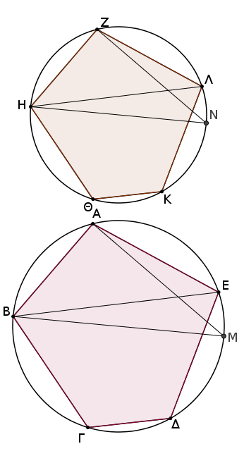
᾿Επεζεύχθωσαν γὰρ αἱ ΒΕ, ΑΜ, ΗΛ, ΖΝ. καὶ ἐπεὶ ὅμοιον τὸ ΑΒΓΔΕ πολύγωνον τῷ ΖΗΘΚΛ πολυγώνῳ, ἴση ἐστὶ καὶ ἡ ὑπὸ ΒΑΕ γωνία τῇ ὑπὸ ΗΖΛ, καί ἐστιν ὡς ἡ ΒΑ πρὸς τὴν ΑΕ, οὕτως ἡ ΗΖ πρὸς τὴν ΖΛ. δύο δὴ τρίγωνά ἐστι τὰ ΒΑΕ, ΗΖΛ μίαν γωνίαν μιᾷ γωνίᾳ ἴσην ἔχοντα τὴν ὑπὸ ΒΑΕ τῇ ὑπὸ ΗΖΛ, περὶ δὲ τὰς ἴσας γωνίας τὰς πλευρὰς ἀνάλογον· ἰσογώνιον ἄρα ἐστὶ τὸ ΑΒΕ τρίγωνον τῷ ΖΗΛ τριγώνῳ. ἴση ἄρα ἐστὶν ἡ ὑπὸ ΑΕΒ γωνία τῇ ὑπὸ ΖΛΗ.
ἀλλ᾿ ἡ μὲν ὑπὸ ΑΕΒ τῇ ὑπὸ ΑΜΒ ἐστιν ἴση· ἐπὶ γὰρ τῆς αὐτῆς περιφερείας βεβήκασιν· ἡ δὲ ὑπὸ ΖΛΗ τῇ ὑπὸ ΖΝΗ· καὶ ἡ ὑπὸ ΑΜΒ ἄρα τῇ ὑπὸ ΖΝΗ ἐστιν ἴση. ἔστι δὲ καὶ ὀρθὴ ἡ ὑπὸ ΒΑΜ ὀρθῇ τῇ ὑπὸ ΗΖΝ ἴση· καὶ ἡ λοιπὴ ἄρα τῇ λοιπῇ ἐστιν ἴση. ἰσογώνιον ἄρα ἐστὶ τὸ ΑΒΜ τρίγωνον τῷ ΖΗΝ τρίγωνῳ. ἀνάλογον ἄρα ἐστὶν ὡς ἡ ΒΜ πρὸς τὴν ΗΝ, οὕτως ἡ ΒΑ πρὸς τὴν ΗΖ.
ἀλλὰ τοῦ μὲν τῆς ΒΜ πρὸς τὴν ΗΝ λόγον διπλασίων ἐστὶν ὁ τοῦ ἀπὸ τῆς ΒΜ τετραγώνου πρὸς τὸ ἀπὸ τῆς ΗΝ τετράγωνον, τοῦ δὲ τῆς ΒΑ πρὸς τὴν ΗΖ διπλασίων ἐστὶν ὁ τοῦ ΑΒΓΔΕ πολυγώνου πρὸς τὸ ΖΗΘΚΛ πολύγωνον· καὶ ὡς ἄρα τὸ ἁπὸ τῆς ΒΜ τετράγωνον πρὸς τὸ ἀπὸ τῆς ΗΝ τετράγωνον, οὕτως τὸ ΑΒΓΔΕ πολύγωνον πρὸς τὸ ΖΗΘΚΛ πολύγωνον.
Τὰ ἄρα ἐν τοῖς κύκλοις ὅμοια πολύγωνα πρὸς ἄλληλά ἐστιν ὡς τὰ ἀπὸ τῶν διαμέτρων τετράγωνα· ὅπερ ἔδει δεῖξαι.
Οἱ κύκλοι πρὸς ἀλλήλους εἰσὶν ὡς τὰ ἀπὸ τῶν διαμέτρων τετράγωνα.
῎Εστωσαν κύκλοι οἱ ΑΒΓΔ, ΕΖΗΘ, διάμετροι δὲ αὐτῶν [ἔστωσαν] αἱ ΒΔ, ΖΘ· λέγω, ὅτι ἐστὶν ὡς ὁ ΑΒΓΔ κύκλος πρὸς τὸν ΕΖΗΘ κύκλον, οὕτως τὸ ἀπὸ τῆς ΒΔ τετράγωνον πρὸς τὸ ἀπὸ τῆς ΖΘ τετράγωνον.
Εἰ γὰρ μή ἐστιν ὡς ὁ ΑΒΓΔ κύκλος πρὸς τὸν ΕΖΗΘ, οὕτως τὸ ἀπὸ τῆς ΒΔ τετράγωνον πρὸς τὸ ἀπὸ τῆς ΖΘ, ἔσται ὡς τὸ ἀπὸ τῆς ΒΔ πρὸς τὸ ἀπὸ τῆς ΖΘ, οὕτως ὁ ΑΒΓΔ κύκλος ἤτοι πρὸς ἔλασσόν τι τοῦ ΕΖΗΘ κύκλου χωρίον ἢ πρὸς μεῖζον.
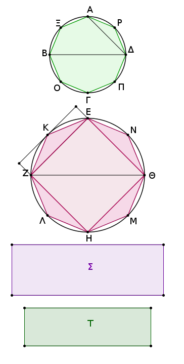
ἔστω πρότερον πρὸς ἔλασσον τὸ Σ. και ἐγγεγράφθω εἰς τὸν ΕΖΗΘ κύκλον τετράγωνον τὸ ΕΖΗΘ. τὸ δὴ ἐγγεγραμμένον τετράγωνον μεῖζόν ἐστιν ἢ τὸ ἥμισυ τοῦ ΕΖΗΘ κύκλου, ἐπειδήπερ ἐὰν διὰ τῶν Ε, Ζ, Η, Θ σημείων ἐφαπτομένας [εὐθείας] τοῦ κύκλου ἀγάγωμεν, τοῦ περιγραφομένου περὶ τὸν κύκλον τετραγώνου ἥμισύ ἐστι τὸ ΕΖΗΘ τετράγωνον, τοῦ δὲ περιγραφέντος τετραγώνου ἐλάττων ἐστὶν ὁ κύκλος· ὥστε τὸ ΕΖΗΘ ἐγγεγραμμένον τετράγωνον μεῖζόν ἐστι τοῦ ἡμίσεως τοῦ ΕΖΗΘ κύκλου.
τετμήσθωσαν δίχα αἱ ΕΖ, ΖΗ, ΗΘ, ΘΕ περιφέρειαι κατὰ τὰ Κ, Λ, Μ, Ν σημεῖα, καὶ ἐπεζεύχθωσαν αἱ ΕΚ, ΚΖ, ΖΛ, ΛΗ, ΗΜ, ΜΘ, ΘΝ, ΝΕ· καὶ ἕκαστον ἄρα τῶν ΕΚΖ, ΖΛΗ, ΗΜΘ, ΘΝΕ τριγώνων μεῖζόν ἐστιν ἢ τὸ ἥμισυ τοῦ καθ᾿ ἑαυτὸ τμήματος τοῦ κύκλου, ἐπειδήπερ ἐὰν διὰ τῶν Κ, Λ, Μ, Ν σημείων ἐφαπτομένας τοῦ κύκλου ἀγάγωμεν καὶ ἀναπληρώσωμεν τὰ ἐπὶ τῶν ΕΖ, ΖΗ, ΗΘ, ΘΕ εὐθειῶν παραλληλόγραμμα, ἕκαστον τῶν ΕΚΖ, ΖΛΗ, ΗΜΘ, ΘΝΕ τριγώνων ἥμισυ ἔσται τοῦ καθ᾿ ἑαυτὸ παραλληλογράμμου, ἀλλὰ τὸ καθ᾿ ἑαυτὸ τμῆμα ἔλαττόν ἐστι τοῦ παραλληλογράμμου· ὥστε ἕκαστον τῶν ΕΚΖ, ΖΛΗ, ΗΜΘ, ΘΝΕ τριγώνων μεῖζόν ἐστι τοῦ ἡμίσεως τοῦ καθ᾿ ἑαυτὸ τμήματος τοῦ κύκλου. τέμνοντες δὴ τὰς ὑπολειπομένας περιφερείας δίχα καὶ ἐπιζευγνύντες εὐθείας καὶ τοῦτο ἀεὶ ποιοῦντες καταλείψομέν τινα ἀποτμήματα τοῦ κύκλου, ἃ ἔσται ἐλάσσονα τῆς ὑπεροχῆς, ᾗ ὑπερέχει ὁ ΕΖΗΘ κύκλος τοῦ Σ χωρίου.
ἐδείχθη γὰρ ἐν τῷ πρώτῳ θεωρήματι τοῦ δεκάτου βιβλίου, ὅτι δύο μεγεθῶν ἀνίσων ἐκκειμένων, ἐὰν ἀπὸ τοῦ μείζονος ἀφαιρεθῇ μεῖζον ἢ τὸ ἥμισυ καὶ τοῦ καταλειπομένου μεῖζον ἢ τὸ ἥμισυ, καὶ τοῦτο ἀεὶ γίγνηται, λειφθήσεταί τι μέγεθος, ὃ ἔσται ἔλασσον τοῦ ἐκκειμένου ἐλάσσονος μεγέθους.
λελείφθω οὖν, καὶ ἔστω τὰ ἐπὶ τῶν ΕΚ, ΚΖ, ΖΛ, ΛΗ, ΗΜ, ΜΘ, ΘΝ, ΝΕ τμήματα τοῦ ΕΖΗΘ κύκλου ἐλάττονα τῆς ὑπεροχῆς, ᾗ ὑπερέχει ὁ ΕΖΗΘ κύκλος τοῦ Σ χωρίου.
λοιπὸν ἄρα τὸ ΕΚΖΛΗΜΘΝ πολύγωνον μεῖζόν ἐστι τοῦ Σ χωρίου. ἐγγεγράφθω καὶ εἰς τὸν ΑΒΓΔ κύκλον τῷ ΕΚΖΛΗΜΘΝ πολυγώνῳ ὅμοιον πολύγωνον τὸ ΑΞΒΟΓΠΔΡ· ἔστιν ἄρα ὡς τὸ ἀπὸ τῆς ΒΔ τετράγωνον πρὸς τὸ ἀπὸ τῆς ΖΘ τετράγωνον, οὕτως τὸ ΑΞΒΟΓΠΔΡ πολύγωνον πρὸς τὸ ΕΚΖΛΗΜΘΝ πολύγωνον.
ἀλλὰ καὶ ὡς τὸ ἀπὸ τῆς ΒΔ τετράγωνον πρὸς τὸ ἀπὸ τῆς ΖΘ, οὕτως ὁ ΑΒΓΔ κύκλος πρὸς τὸ Σ χωρίον· καὶ ὡς ἄρα ὁ ΑΒΓΔ κύκλος πρὸς τὸ Σ χωρίον, οὕτως τὸ ΑΞΒΟΓΠΔΡ πολύγωνον πρὸς τὸ ΕΚΖΛΗΜΘΝ πολύγωνον· ἐναλλὰξ ἄρα ὡς ὁ ΑΒΓΔ κύκλος πρὸς τὸ ἐν αὐτῷ πολύγωνον, οὕτως τὸ Σ χωρίον πρὸς τὸ ΕΚΖΛΗΜΘΝ πολύγωνον. μείζων δὲ ὁ ΑΒΓΔ κύκλος τοῦ ἐν αὐτῷ πολυγώνου· μεῖζον ἄρα καὶ τὸ Σ χωρίον τοῦ ΕΚΖΛΗΜΘΝ πολυγώνου. ἀλλὰ καὶ ἔλαττον· ὅπερ ἐστὶν ἀδύνατον. οὐκ ἄρα ἐστὶν ὡς τὸ ἀπὸ τῆς ΒΔ τετράγωνον πρὸς τὸ ἀπὸ τῆς ΖΘ, οὕτως ὁ ΑΒΓΔ κύκλος πρὸς ἔλασσόν τι τοῦ ΕΖΗΘ κύκλου χωρίον.
ὁμοίως δὴ δείξομεν, ὅτι οὐδὲ ὡς τὸ ἀπὸ ΖΘ πρὸς τὸ ἀπὸ ΒΔ, οὕτως ὁ ΕΖΗΘ κύκλος πρὸς ἔλασσόν τι τοῦ ΑΒΓΔ κύκλου χωρίον. Λέγω δή, ὅτι οὐδὲ ὡς τὸ ἀπὸ τῆς ΒΔ πρὸς τὸ ἀπὸ τῆς ΖΘ, οὕτως ὁ ΑΒΓΔ κύκλος πρὸς μεῖζόν τι τοῦ ΕΖΗΘ κύκλου χωρίον.
Εἰ γὰρ δυνατόν, ἔστω πρὸς μεῖζον τὸ Σ. ἀνάπαλιν ἄρα [ἐστὶν] ὡς τὸ ἀπὸ τῆς ΖΘ τετράγωνον πρὸς τὸ ἀπὸ τῆς ΔΒ, οὕτως τὸ Σ χωρίον πρὸς τὸν ΑΒΓΔ κύκλον. ἀλλ᾿ ὡς τὸ Σ χωρίον πρὸς τὸν ΑΒΓΔ κύκλον, οὕτως ὁ ΕΖΗΘ κύκλος πρὸς ἔλαττόν τι τοῦ ΑΒΓΔ κύκλου χωρίον· καὶ ὡς ἄρα τὸ ἀπὸ τῆς ΖΘ πρὸς τὸ ἀπὸ τῆς ΒΔ, οὕτως ὁ ΕΖΗΘ κύκλος πρὸς ἔλασσόν τι τοῦ ΑΒΓΔ κύκλου χωρίον· ὅπερ ἀδύνατον ἐδείχθη.
οὐκ ἄρα ἐστὶν ὡς τὸ ἀπὸ τῆς ΒΔ τετράγωνον πρὸς τὸ ἀπὸ τῆς ΖΘ, οὕτως ὁ ΑΒΓΔ κύκλος πρὸς μεῖζόν τι τοῦ ΕΖΗΘ κύκλου χωρίον. ἐδείχθη δέ, ὅτι οὐδὲ πρὸς ἔλασσον· ἔστιν ἄρα ὡς τὸ ἀπὸ τῆς ΒΔ τετράγωνον πρὸς τὸ ἀπὸ τῆς ΖΘ, οὕτως ὁ ΑΒΓΔ κύκλος πρὸς τὸν ΕΖΗΘ κύκλον. Οἱ ἄρα κύκλοι πρὸς ἀλλήλους εἰσὶν ὡς τὰ ἀπὸ τῶν διαμέτρων τετράγωνα· ὅπερ ἔδει δεῖξαι.
Λ ῆ μ μ α : Λέγω δή, ὅτι τοῦ Σ χωρίου μείζονος ὄντος τοῦ ΕΖΗΘ κύκλου ἐστὶν ὡς τὸ Σ χωρίον πρὸς τὸν ΑΒΓΔ κύκλον, οὕτως ὁ ΕΖΗΘ κύκλος πρὸς ἔλαττόν τι τοῦ ΑΒΓΔ κύκλου χωρίον.
Γεγονέτω γὰρ ὡς τὸ Σ χωρίον πρὸς τὸν ΑΒΓΔ κύκλον, οὕτως ὁ ΕΖΗΘ κύκλος πρὸς τὸ Τ χωρίον. λέγω, ὅτι ἔλαττόν ἐστι τὸ Τ χωρίον τοῦ ΑΒΓΔ κύκλου. ἐπεὶ γάρ ἐστιν ὡς τὸ Σ χωρίον πρὸς τὸν ΑΒΓΔ κύκλον, οὕτως ὁ ΕΖΗΘ κύκλος πρὸς τὸ Τ χωρίον, ἐναλλάξ ἐστιν ὡς τὸ Σ χωρίον πρὸς τὸν ΕΖΗΘ κύκλον, οὕτως ὁ ΑΒΓΔ κύκλος πρὸς τὸ Τ χωρίον. μεῖζον δὲ τὸ Σ χωρίον τοῦ ΕΖΗΘ κύκλου· μείζων ἄρα καὶ ὁ ΑΒΓΔ κύκλος τοῦ Τ χωρίου.
ὥστε ἐστὶν ὡς τὸ Σ χωρίον πρὸς τὸν ΑΒΓΔ κύκλον, οὕτως ὁ ΕΖΗΘ κύκλος πρὸς ἔλαττόν τι τοῦ ΑΒΓΔ κύκλου χωρίον· ὅπερ ἔδει δεῖξαι.
Πᾶσα πυραμὶς τρίγωνον ἔχουσα βάσιν διαιρεῖται εἰς δύο πυραμίδας ἴσας τε καὶ ὁμοίας ἀλλήλαις καὶ [ὁμοίας] τῇ ὅλῇ τριγώνους ἐχουσας βάσεις καὶ εἰς δύο πρίσματα ἴσα· καὶ τὰ δύο πρίσματα μείζονά ἐστιν ἢ τὸ ἥμισυ τῆς ὅλης πυραμίδος.
῎Εστω πυραμίς, ἧς βάσις μέν ἐστι τὸ ΑΒΓ τρίγωνον, κορυφὴ δὲ τὸ Δ σημεῖον· λέγω, ὅτι ἡ ΑΒΓΔ πυραμὶς διαιρεῖται εἰς δύο πυραμίδας ἴσας ἀλλήλαις τριγώνους βάσεις ἐχούσας καὶ ὁμοίας τῇ ὅλῇ καὶ εἰς δύο πρίσματα ἴσα· καὶ τὰ δύο πρίσματα μείζονά ἐστιν ἢ τὸ ἥμισυ τῆς ὅλης πυραμίδος.
Τετμήσθωσαν γὰρ αἱ ΑΒ, ΒΓ, ΓΑ, ΑΔ, ΔΒ, ΔΓ δίχα κατὰ τὰ Ε, Ζ, Η, Θ, Κ, Λ σημεῖα, καὶ ἐπεζεύχθωσαν αἱ ΘΕ, ΕΗ, ΗΘ, ΘΚ, ΚΛ, ΛΘ, ΚΖ, ΖΗ. ἐπεὶ ἴση ἐστὶν ἡ μὲν ΑΕ τῇ ΕΒ, ἡ δὲ ΑΘ τῇ ΔΘ, παράλληλος ἄρα ἐστὶν ἡ ΕΘ τῇ ΔΒ. διὰ τὰ αὐτὰ δὴ καὶ ἡ ΘΚ τῇ ΑΒ παράλληλός ἐστιν.
παραλληλόγραμμον ἄρα ἐστὶ τὸ ΘΕΒΚ· ἴση ἄρα ἐστὶν ἡ ΘΚ τῇ ΕΒ. ἀλλὰ ἡ ΕΒ τῇ ΕΑ ἐστιν ἴση· καὶ ἡ ΑΕ ἄρα τῇ ΘΚ ἐστιν ἴση. ἔστι δὲ καὶ ἡ ΑΘ τῇ ΘΔ ἴση· δύο δὴ αἱ ΕΑ, ΑΘ δυσὶ ταῖς ΚΘ, ΘΔ ἴσαι εἰσὶν ἑκατέρα ἑκατέρᾳ· καὶ γωνία ἡ ὑπὸ ΕΑΘ γωνίᾳ τῇ ὑπὸ ΚΘΔ ἴση· βάσις ἄρα ἡ ΕΘ βάσει τῇ ΚΔ ἐστιν ἴση. ἴσον ἄρα καὶ ὅμοιόν ἐστι τὸ ΑΕΘ τρίγωνον τῷ ΘΚΔ τριγώνῳ.
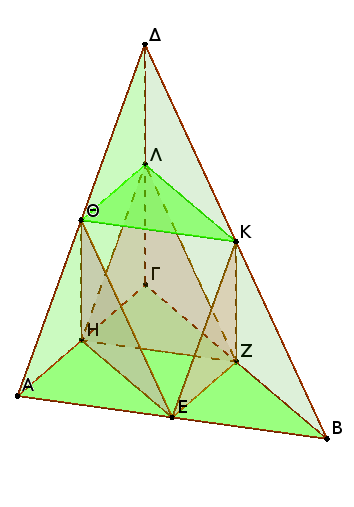
διὰ τὰ αὐτὰ δὴ καὶ τὸ ΑΘΗ τρίγωνον τῷ ΘΛΔ τριγώνῳ ἴσον τέ ἐστι καὶ ὅμοιον. καὶ ἐπεὶ δύο εὐθεῖαι ἁπτόμεναι ἀλλήλων αἱ ΕΘ, ΘΗ παρὰ δύο εὐθείας ἁπτομένας ἀλλήλων τὰς ΚΔ, ΔΛ εἰσιν οὐκ ἐν τῷ αὐτῷ ἐπιπέδῳ οὖσαι, ἴσας γωνίας περιέξουσιν. ἴση ἄρα ἐστὶν ἡ ὑπὸ ΕΘΗ γωνία τῇ ὑπὸ ΚΔΛ γωνίᾳ. καὶ ἐπεὶ δύο εὐθεῖαι αἱ ΕΘ, ΘΗ δυσὶ ταῖς ΚΔ, ΔΛ ἴσαι εἰσὶν ἑκατέρα εκατέρᾳ, καὶ γωνία ἡ ὑπὸ ΕΘΗ γωνίᾳ τῇ ὑπὸ ΚΔΛ ἐστιν ἴση, βάσις ἄρα ἡ ΕΗ βάσει τῇ ΚΛ [ἐστιν] ἴση· ἴσον ἄρα καὶ ὅμοιόν ἐστι τὸ ΕΘΗ τρίγωνον τῷ ΚΔΛ τριγώνῳ.
διὰ τὰ αὐτὰ δὴ καὶ τὸ ΑΕΗ τρίγωνον τῷ ΘΚΛ τριγώνῳ ἴσον τε καὶ ὅμοιόν ἐστιν. ἡ ἄρα πυραμίς, ἧς βάσις μέν ἐστι τὸ ΑΕΗ τρίγωνον, κορυφὴ δὲ τὸ Θ σημεῖον, ἴση καὶ ὁμοία ἐστὶ πυραμίδι, ἧς βάσις μέν ἐστι τὸ ΘΚΛ τρίγωνον, κορυφὴ δὲ τὸ Δ σημεῖον.
καὶ ἐπεὶ τριγώνου τοῦ ΑΔΒ παρὰ μίαν τῶν πλευρῶν τὴν ΑΒ ἦκται ἡ ΘΚ, ἰσογώνιόν ἐστι τὸ ΑΔΒ τρίγωνον τῷ ΔΘΚ τριγώνῳ, καὶ τὰς πλευρὰς ἀνάλογον ἔχουσιν· ὅμοιον ἄρα ἐστὶ τὸ ΑΔΒ τρίγωνον τῷ ΔΘΚ τριγώνῳ. διὰ τὰ αὐτὰ δὴ καὶ τὸ μὲν ΔΒΓ τρίγωνον τῷ ΔΚΛ τριγώνῳ ὅμοιόν ἐστιν, τὸ δὲ ΑΔΓ τῷ ΔΛΘ.
καὶ ἐπεὶ δύο εὐθεῖαι ἁπτόμεναι ἀλλήλων αἱ ΒΑ, ΑΓ παρὰ δύο εὐθείας ἁπτομένας ἀλλήλων τὰς ΚΘ, ΘΛ εἰσιν οὐκ ἐν τῷ αὐτῷ ἐπιπέδῳ, ἴσας γωνίας περιέξουσιν. ἴση ἄρα ἐστὶν ἡ ὑπὸ ΒΑΓ γωνία τῇ ὑπὸ ΚΘΛ. καί ἐστιν ὡς ἡ ΒΑ πρὸς τὴν ΑΓ, οὕτως ἡ ΚΘ πρὸς τὴν ΘΛ· ὅμοιον ἄρα ἐστὶ τὸ ΑΒΓ τρίγωνον τῷ ΘΚΛ τριγώνῳ. καὶ πυραμὶς ἄρα, ἧς βάσις μέν ἐστι τὸ ΑΒΓ τρίγωνον, κορυφὴ δὲ τὸ Δ σημεῖον, ὁμοία ἐστὶ πυραμίδι, ἧς βάσις μέν ἐστι τὸ ΘΚΛ τρίγωνον, κορυφὴ δὲ τὸ Δ σημεῖον.
ἀλλὰ πυραμίς, ἧς βάσις μέν [ἐστι] τὸ ΘΚΛ τρίγωνον, κορυφὴ δὲ τὸ Δ σημεῖον, ὁμοία ἐδείχθη πυραμίδι, ἧς βάσις μέν ἐστι τὸ ΑΕΗ τρίγωνον, κορυφὴ δὲ τὸ Θ σημεῖον. ἑκατέρα ἄρα τῶν ΑΕΗΘ, ΘΚΛΔ πυραμίδων ὁμοία ἐστὶ τῇ ὅλῃ τῇ ΑΒΓΔ πυραμίδι.
Καὶ ἐπεὶ ἴση ἐστὶν ἡ ΒΖ τῇ ΖΓ, διπλάσιόν ἐστι τὸ ΕΒΖΗ παραλληλόγραμμον τοῦ ΗΖΓ τριγώνου. καὶ ἐπεὶ, ἐὰν ᾖ δύο πρίσματα ἰσοϋψῆ, καὶ τὸ μὲν ἔχῃ βάσιν παραλληλόγραμμον, τὸ δὲ τρίγωνον, διπλάσιον δὲ ᾖ τὸ παραλληλόγραμμον τοῦ τριγώνου, ἴσα ἐστὶ τὰ πρίσματα, ἴσον ἄρα ἐστὶ τὸ πρίσμα τὸ περιεχόμενον ὑπὸ δύο μὲν τριγώνων τῶν ΒΚΖ, ΕΘΗ, τριῶν δὲ παραλληλογράμμων τῶν ΕΒΖΗ, ΕΒΚΘ, ΘΚΖΗ τῷ πρισματι τῷ περιεχομένῳ ὑπὸ δύο μὲν τριγώνων τῶν ΗΖΓ, ΘΚΛ, τριῶν δὲ παραλληλογράμμων τῶν ΚΖΓΛ, ΛΓΗΘ, ΘΚΖΗ.
καὶ φανερόν, ὅτι ἑκάτερον τῶν πρισμάτων, οὗ τε βάσις τὸ ΕΒΖΗ παραλληλόγραμμον, ἀπεναντίον δὲ ἡ ΘΚ εὐθεῖα, καὶ οὗ βάσις τὸ ΗΖΓ τρίγωνον, ἀπεναντίον δὲ τὸ ΘΚΛ τρίγωνον, μεῖζόν ἐστιν ἑκατέρας τῶν πυραμίδων, ὧν βάσεις μὲν τὰ ΑΕΗ, ΘΚΛ τρίγωνα, κορυφαὶ, δὲ τὰ Θ, Δ σημεῖα, ἐπειδήπερ [καί] ἐὰν ἐπιζεύξωμεν τὰς ΕΖ, ΕΚ εὐθείας, τὸ μὲν πρίσμα, οὗ βάσις τὸ ΕΒΖΗ παραλληλόγραμμον, ἀπεναντίον δὲ ἡ ΘΚ εὐθεῖα, μεῖζόν ἐστι τῆς πυραμίδος, ἧς βάσις τὸ ΕΒΖ τρίγωνον, κορυφὴ δὲ τὸ Κ σημεῖον.
ἀλλ᾿ ἡ πυραμίς, ἧς βάσις τὸ ΕΒΖ τρίγωνον, κορυφὴ δὲ τὸ Κ σημεῖον, ἴση ἐστὶ πυραμίδι, ἧς βάσις τὸ ΑΕΗ τρίγωνον, κορυφὴ δὲ τὸ Θ σημεῖον· ὑπὸ γὰρ ἴσων καὶ ὁμοίων ἐπιπέδων περιέχονται. ὥστε καὶ τὸ πρίσμα, οὗ βάσις μὲν τὸ ΕΒΖΗ παραλληλόγραμμον, ἀπεναντίον δὲ ἡ ΘΚ εὐθεῖα, μεῖζόν ἐστι πυραμίδος, ἧς βάσις μὲν τὸ ΑΕΗ τρίγωνον, κορυφὴ δὲ τὸ Θ σημεῖον.
ἴσον δὲ τὸ μὲν πρίσμα, οὗ βάσις τὸ ΕΒΖΗ παραλληλόγραμμον, ἀπεναντίον δὲ ἡ ΘΚ εὐθεῖα, τῷ πρίσματι, οὗ βάσις μὲν τὸ ΗΖΓ τρίγωνον, ἀπεναντίον δὲ τὸ ΘΚΛ τρίγωνον· ἡ δὲ πυραμίς, ἧς βάσις τὸ ΑΕΗ τρίγωνον, κορυφὴ δὲ τὸ Θ σημεῖον, ἴση ἐστὶ πυραμίδι, ἧς βάσις τὸ ΘΚΛ τρίγωνον, κορυφὴ δὲ τὸ Δ σημεῖον. τὰ ἄρα εἰρημένα δύο πρίσματα μείζονά ἐστι τῶν εἰρημένων δύο πυραμίδων, ὧν βάσεις μὲν τὰ ΑΕΗ, ΘΚΛ τρίγωνα, κορυφαὶ δὲ τὰ Θ, Δ σημεῖα.
῾Η ἄρα ὅλη πυραμίς, ἧς βάσις τὸ ΑΒΓ τρίγωνον, κορυφὴ δὲ τὸ Δ σημεῖον, διῄρηται εἴς τε δύο πυραμίδας ἴσας ἀλλήλαις [καὶ ὁμοίας τῇ ὅλῃ] καὶ εἰς δύο πρίσματα ἴσα, καὶ τὰ δύο πρίσματα μείζονά ἐστιν ἢ τὸ ἥμισυ τῆς ὅλης πυραμίδος· ὅπερ ἔδει δεῖξαι.
᾿Εὰν ὦσι δύο πυραμίδες ὑπὸ τὸ αὐτὸ ὕψος τριγώνους ἔχουσαι βάσεις, διαιρεθῇ δὲ ἑκατέρα αὐτῶν εἴς τε δύο πυραμίδας ἴσας ἀλλήλαις καὶ ὁμοίας τῇ ὅλῃ καὶ εἰς δύο πρίσματα ἴσα, ἔσται ὡς ἡ τῆς μιᾶς πυραμίδος βάσις πρὸς τὴν τῆς ἑτέρας πυραμίδος βάσιν, οὕτως τὰ ἐν τῇ μιᾷ πυραμίδι πρίσματα πάντα πρὸς τὰ ἐν τῇ ἑτάρᾳ πυραμίδι πρίσματα πάντα ἰσοπληθῇ.
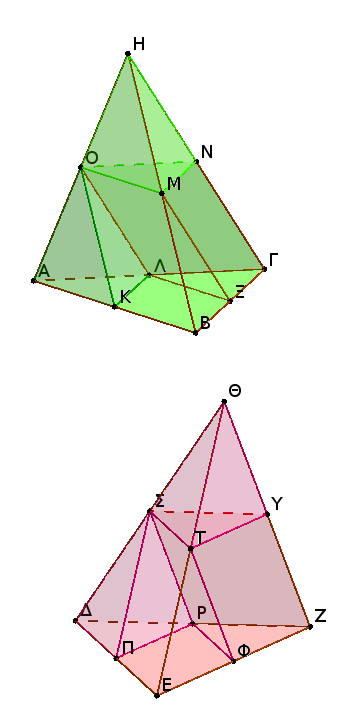
῎Εστωσαν δύο πυραμίδες ὑπὸ τὸ αὐτὸ ὕψος τριγώνους ἔχουσαι βάσεις τὰς ΑΒΓ, ΔΕΖ, κορυφὰς δὲ τὰ Η, Θ σημεῖα, καὶ διῃρήσθω ἑκατέρα αὐτῶν εἴς τε δύο πυραμίδας ἴσας ἀλλήλαις καὶ ὁμοίας τῇ ὅλῃ καὶ εἰς δύο πρίσματα ἴσα· λέγω, ὅτι ἐστὶν ὡς ἡ ΑΒΓ βάσις πρὸς τὴν ΔΕΖ βάσιν, οὕτως τὰ ἐν τῇ ΑΒΓΗ πυραμίδι πρίσματα πάντα πρὸς τὰ ἐν τῇ ΔΕΖΘ πυραμίδι πρίσματα ἰσοπληθῆ.
᾿Επεὶ γὰρ ἴση ἐστὶν ἡ μὲν ΒΞ τῇ ΞΓ, ἡ δὲ ΑΛ τῇ ΛΓ, παράλληλος ἄρα ἐστὶν ἡ ΛΞ τῇ ΑΒ καὶ ὅμοιον τὸ ΑΒΓ τρίγωνον τῷ ΛΞΓ τριγώνῳ. διὰ τὰ αὐτὰ δὴ καὶ τὸ ΔΕΖ τρίγωνον τῷ ΡΦΖ τριγώνῳ ὅμοιόν ἐστιν. καὶ ἐπεὶ διπλασίων ἐστὶν ἡ μὲν ΒΓ τῆς ΓΞ, ἡ δὲ ΕΖ τῆς ΖΦ, ἔστιν ἄρα ὡς ἡ ΒΓ πρὸς τὴν ΓΞ, οὕτως ἡ ΕΖ πρὸς τὴν ΖΦ.
καὶ ἀναγέγραπται ἀπὸ μὲν τῶν ΒΓ, ΓΞ ὅμοιά τε καὶ ὁμοίως κείμενα εὐθύγραμμα τὰ ΑΒΓ, ΛΞΓ, ἀπὸ δὲ τῶν ΕΖ, ΖΦ ὅμοιά τε καὶ ὁμοίως κείμενα [εὐθύγραμμα] τὰ ΔΕΖ, ΡΦΖ· ἔστιν ἄρα ὡς τὸ ΑΒΓ τρίγωνον πρὸς τὸ ΛΞΓ τρίγωνον, οὕτως τὸ ΔΕΖ τρίγωνον πρὸς τὸ ΡΦΖ τρίγωνον· ἐναλλὰξ ἄρα ἐστὶν ὡς τὸ ΑΒΓ τρίγωνον πρὸς τὸ ΔΕΖ [τρίγωνον], οὕτως τὸ ΛΞΓ [τρίγωνον] πρὸς τὸ ΡΦΖ τρίγωνον.
ἀλλ᾿ ὡς τὸ ΛΞΓ τρίγωνον πρὸς τὸ ΡΦΖ τρίγωνον, οὕτως τὸ πρίσμα, οὗ βάσις μέν [ἐστι] τὸ ΛΞΓ τρίγωνον, ἀπεναντίον δὲ τὸ ΟΜΝ, πρὸς τὸ πρίσμα, οὗ βάσις μὲν τὸ ΡΦΖ τρίγωνον, ἀπεναντίον δὲ τὸ ΣΤΥ· καὶ ὡς ἄρα τὸ ΑΒΓ τρίγωνον πρὸς τὸ ΔΕΖ τρίγωνον, οὕτως τὸ πρίσμα, οὗ βάσις μὲν τὸ ΛΞΓ τρίγωνον, ἀπεναντίον δὲ τὸ ΟΜΝ, πρὸς τὸ πρίσμα, οὗ βάσις μὲν τὸ ΡΦΖ τρίγωνον, ἀπεναντίον δὲ τὸ ΣΤΥ.
ὡς δὲ τὰ εἰρημένα πρίσματα πρὸς ἄλληλα, οὕτως τὸ πρίσμα, οὗ βάσις μὲν τὸ ΚΒΞΛ παραλληλόγραμμον, ἀπεναντίον δὲ ἡ ΟΜ εὐθεῖα, πρὸς τὸ πρίσμα, οὗ βάσις μὲν τὸ ΠΕΦΡ παραλληλόγραμμον, ἀπεναντίον δὲ ἡ ΣΤ εὐθεῖα. καὶ τὰ δύο ἄρα πρίσματα, οὗ τε βάσις μὲν τὸ ΚΒΞΛ παραλληλόγραμμον, ἀπεναντίον δὲ ἡ ΟΜ, καὶ οὗ βάσις μὲν τὸ ΛΞΓ, ἀπεναντίον δὲ τὸ ΟΜΝ, πρὸς τὰ πρίσματα, οὗ τε βάσις μὲν τὸ ΠΕΦΡ, ἀπεναντίον δὲ ἡ ΣΤ εὐθεῖα, καὶ οὗ βάσις μὲν τὸ ΡΦΖ τρίγωνον, ἀπεναντίον δὲ τὸ ΣΤΥ. καὶ ὡς ἄρα ἡ ΑΒΓ βάσις πρὸς τὴν ΔΕΖ βάσιν, οὕτως τὰ εἰρημένα δύο πρίσματα πρὸς τὰ εἰρημένα δύο πρίσματα.
Καὶ ὁμοίως, ἐὰν διαιρεθῶσιν αἱ ΟΜΝΗ, ΣΤΥΘ πυραμίδες εἴς τε δύο πρίσματα καὶ δύο πυραμίδας, ἔσται ὡς ἡ ΟΜΝ βάσις πρὸς τὴν ΣΤΥ βάσιν, οὕτως τὰ ἐν τῇ ΟΜΝΗ πυραμίδι δύο πρίσματα πρὸς τὰ ἐν τῇ ΣΤΥΘ πυραμίδι δύο πρίσματα. ἀλλ᾿ ὡς ἡ ΟΜΝ βάσις πρὸς τὴν ΣΤΥ βάσιν, οὕτως ἡ ΑΒΓ βάσις πρὸς τὴν ΔΕΖ βάσιν· ἴσον γὰρ ἑκάτερον τῶν ΟΜΝ, ΣΤΥ τριγώνων ἑκατέρῳ τῶν ΛΞΓ, ΡΦΖ. καὶ ὡς ἄρα ἡ ΑΒΓ βάσις πρὸς τὴν ΔΕΖ βάσιν, οὕτως τὰ τέσσαρα πρίσματα πρὸς τὰ τέσσαρα πρίσματα. ὁμοίως δὲ κἂν τὰς ὑπολειπομένας πυραμίδας διέλωμεν εἴς τε δύο πυραμίδας καὶ εἰς δύο πρίσματα, ἔσται ὡς ἡ ΑΒΓ βάσις πρὸς τὴν ΔΕΖ βάσιν, οὕτως τὰ ἐν τῇ ΑΒΓΗ πυραμίδι πρίσματα πάντα πρὸς τὰ ἐν τῇ ΔΕΖΘ πυραμίδι πρίσματα πάντα ἰσοπληθῆ· ὅπερ ἔδει δεῖξαι.
Λ ῆ μ μ α : ῞Οτι δέ ἐστιν ὡς τὸ ΛΞΓ τρίγωνον πρὸς τὸ ΡΦΖ τρίγωνον, οὕτως τὸ πρίσμα, οὗ βάσις τὸ ΛΞΓ τρίγωνον, ἀπεναντίον δὲ τὸ ΟΜΝ, πρὸς τὸ πρίσμα, οὗ βάσις μὲν τὸ ΡΦΖ [τρίγωνον], ἀπεναντίον δὲ τὸ ΣΤΥ, οὕτω δεικτέον.
᾿Επὶ γὰρ τῆς αὐτῆς καταγραφῆς νενοήσθωσαν ἀπὸ τῶν Η, Θ κάθετοι ἐπὶ τὰ ΑΒΓ, ΔΕΖ ἐπίπεδα, ἴσαι δηλαδὴ τυγχάνουσαι διὰ τὸ ἰσοϋψεῖς ὑποκεῖσθαι τὰς πυραμίδας. καὶ ἐπεὶ δύο εὐθεῖαι ἥ τε ΗΓ καὶ ἡ ἀπὸ τοῦ Η κάθετος ὑπὸ παραλλήλων ἐπιπέδων τῶν ΑΒΓ, ΟΜΝ τέμνονται, εἰς τοὺς αὐτοὺς λόγους τμηθήσονται. καὶ τέτμηται ἡ ΗΓ δίχα ὑπὸ τοῦ ΟΜΝ ἐπιπέδου κατὰ τὸ Ν· καὶ ἡ ἀπὸ τοῦ Η ἄρα κάθετος ἐπὶ τὸ ΑΒΓ ἐπίπεδον δίχα τμηθήσεται ὑπὸ τοῦ ΟΜΝ ἐπιπέδου.
διὰ τὰ αὐτὰ δὴ καὶ ἡ ἀπὸ τοῦ Θ κάθετος ἐπὶ τὸ ΔΕΖ ἐπίπεδον δίχα τμηθήσεται ὑπὸ τοῦ ΣΤΥ ἐπιπέδου. καί εἰσιν ἴσαι αἱ ἀπὸ τῶν Η, Θ κάθετοι ἐπὶ τὰ ΑΒΓ, ΔΕΖ ἐπίπεδα· ἴσαι ἄρα καὶ αἱ ἀπὸ τῶν ΟΜΝ, ΣΤΥ τριγώνων ἐπὶ τὰ ΑΒΓ, ΔΕΖ κάθετοι. ἰσοϋψῆ ἄρα [ἐστὶ] τὰ πρίσματα, ὧν βάσεις μέν εἰσι τὰ ΛΞΓ, ΡΦΖ τρίγωνα, ἀπεναντίον δὲ τὰ ΟΜΝ, ΣΤΥ. ὥστε καὶ τὰ στερεὰ παραλληλεπίπεδα τὰ ἀπὸ τῶν εἰρημένων πρισμάτων ἀναγραφόμενα ἰσοϋψῆ καὶ πρὸς ἄλληλά [εἰσιν] ὡς αἱ βάσεις· καὶ τὰ ἡμίση ἄρα ἐστὶν ὡς ἡ ΛΞΓ βάσις πρὸς τὴν ΡΦΖ βάσιν, οὕτως τὰ εἰρημένα πρίσματα πρὸς ἄλληλα· ὅπερ ἔδει δεῖξαι.
Αἱ ὑπὸ τὸ αὐτὸ ὕψος οὖσαι πυραμίδες καὶ τριγώνους ἔχουσαι βάσεις πρὸς ἀλλήλας εἰσὶν ὡς αἱ βάσεις.
῎Εστωσαν ὑπὸ τὸ αὐτὸ ὕψος πυραμίδες, ὧν βάσεις μὲν τὰ ΑΒΓ, ΔΕΖ τρίγωνα, κορυφαὶ δὲ τὰ Η, Θ σημεῖα· λέγω, ὅτι ἐστὶν ὡς ἡ ΑΒΓ βάσις πρὸς τὴν ΔΕΖ βάσιν, οὕτως ἡ ΑΒΓΗ πυραμὶς πρὸς τὴν ΔΕΖΘ πυραμίδα.
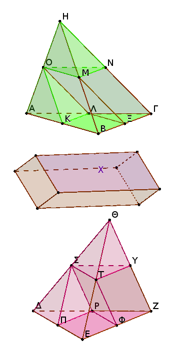
Εἰ γὰρ μή ἐστιν ὡς ἡ ΑΒΓ βάσις πρὸς τὴν ΔΕΖ βάσιν, οὕτως ἡ ΑΒΓΗ πυραμὶς πρὸς τὴν ΔΕΖΘ πυραμίδα, ἔσται ὡς ἡ ΑΒΓ βάσις πρὸς τὴν ΔΕΖ βάσιν, οὕτως ἡ ΑΒΓΗ πυραμὶς ἤτοι πρὸς ἔλασσόν τι τῆς ΔΕΖΘ πυραμίδος στερεὸν ἢ πρὸς μεῖζον.
ἔστω πρότερον πρὸς ἔλασσον τὸ Χ, καὶ διῃρὴσθω ἡ ΔΕΖΘ πυραμὶς εἴς τε δύο πυραμίδας ἴσας ἀλλήλαις καὶ ὁμοίας τῇ ὅλῃ καὶ εἰς δύο πρίσματα ἴσα· τὰ δὴ δύο πρίσαμτα μείζονά ἐστιν ἢ τὸ ἥμισυ τῆς ὅλης πυραμίδος.
καὶ πάλιν αἱ ἐκ τῆς διαιρέσεως γινόμεναι πυραμίδες ὁμοίως διῃρήσθωσαν, καὶ τοῦτο ἀεὶ γινέσθω, ἕως οὗ λειφθῶσί τινες πυραμίδες ἀπὸ τῆς ΔΕΖΘ πυραμίδος, αἵ εἰσιν ἐλάττονες τῆς ὑπεροχῆς, ᾗ ὑπερέχει ἡ ΔΕΖΘ πυραμὶς τοῦ Χ στερεοῦ.
λελείφθωσαν καὶ ἔστωσαν λόγου ἕνεκεν αἱ ΔΠΡΣ, ΣΤΥΘ· λοιπὰ ἄρα τὰ ἐν τῇ ΔΕΖΘ πυραμίδι πρίσματα μείζονά ἐστι τοῦ Χ στερεοῦ.
διῃρήσθω καὶ ἡ ΑΒΓΗ πυραμὶς ὁμοίως καὶ ἰσοπληθῶς τῇ ΔΕΖΘ πυραμίδι· ἔστιν ἄρα ὡς ἡ ΑΒΓ βάσις πρὸς τὴν ΔΕΖ βάσιν, οὕτως τὰ ἐν τῇ ΑΒΓΗ πυραμίδι πρίσματα πρὸς τὰ ἐν τῇ ΔΕΖΘ πυραμίδι πρίσματα, ἀλλὰ καὶ ὡς ἡ ΑΒΓ βάσις πρὸς τὴν ΔΕΖ βάσιν, οὕτως ἡ ΑΒΓΗ πυραμὶς πρὸς τὸ Χ στερεόν· καὶ ὡς ἄρα ἡ ΑΒΓΗ πυραμὶς πρὸς τὸ Χ στερεόν, οὕτως τὰ ἐν τῇ ΑΒΓΗ πυραμίδι πρίσματα πρὸς τὰ ἐν τῇ ΔΕΖΘ πυραμίδι πρίσματα· ἐναλλὰξ ἄρα ὡς ἡ ΑΒΓΗ πυραμὶς πρὸς τὰ ἐν αὐτῇ πρίσματα, οὕτως τὸ Χ στερεὸν πρὸς τὰ ἐν τῇ ΔΕΖΘ πυραμίδι πρίσματα.
μείζων δὲ ἡ ΑΒΓΗ πυραμὶς τῶν ἐν αὐτῇ πρισμάτων· μεῖζον ἄρα καὶ τὸ Χ στερεὸν τῶν ἐν τῇ ΔΕΖΘ πυραμίδι πρισμάτων. ἀλλὰ καὶ ἔλαττον· ὅπερ ἐστὶν ἀδύνατον. οὐκ ἄρα ἐστὶν ὡς ἡ ΑΒΓ βάσις πρὸς τὴν ΔΕΖ βάσιν, οὕτως ἡ ΑΒΓΗ πυραμὶς πρὸς ἔλασσόν τι τῆς ΔΕΖΘ πυραμίδος στερεόν. ὁμοίως δὴ δειχθήσεται, ὅτι οὐδὲ ὡς ἡ ΔΕΖ βάσις πρὸς τὴν ΑΒΓ βάσιν, οὕτως ἡ ΔΕΖΘ πυραμὶς πρὸς ἔλαττόν τι τῆς ΑΒΓΗ πυραμίδος στερεόν.
Λέγω δή, ὅτι οὐκ ἔστιν οὐδὲ ὡς ἡ ΑΒΓ βάσις πρὸς τὴν ΔΕΖ βάσιν, οὕτως ἡ ΑΒΓΗ πυραμὶς πρὸς μεῖζόν τι τῆς ΔΕΖΘ πυραμίδος στερεόν.
Εἰ γὰρ δυνατόν, ἔστω πρὸς μεῖζον τὸ Χ· ἀνάπαλιν ἄρα ἐστὶν ὡς ἡ ΔΕΖ βάσις πρὸς τὴν ΑΒΓ βάσιν, οὕτως τὸ Χ στερεὸν πρὸς τὴν ΑΒΓΗ πυραμίδα. ὡς δὲ τὸ Χ στερεὸν πρὸς τὴν ΑΒΓΗ πυραμίδα, οὕτως ἡ ΔΕΖΘ πυραμὶς πρὸς ἔλασσόν τι τῆς ΑΒΓΗ πυραμίδος, ὡς ἔμπροσθεν ἐδείχθη· καὶ ὡς ἄρα ἡ ΔΕΖ βάσις πρὸς τὴν ΑΒΓ βάσιν, οὕτως ἡ ΔΕΖΘ πυραμὶς πρὸς ἔλασσόν τι τῆς ΑΒΓΗ πυραμίδος· ὅπερ ἄτοπον ἐδείχθη.
οὐκ ἄρα ἐστὶν ὡς ἡ ΑΒΓ βάσις πρὸς τὴν ΔΕΖ βάσιν, οὕτως ἡ ΑΒΓΗ πυραμὶς πρὸς μεῖζόν τι τῆς ΔΕΖΘ πυραμίδος στερεόν. ἐδείχθη δέ, ὅτι οὐδὲ πρὸς ἔλασσον. ἔστιν ἄρα ὡς ἡ ΑΒΓ βάσις πρὸς τὴν ΔΕΖ βάσιν, οὕτως ἡ ΑΒΓΗ πυραμὶς πρὸς τὴν ΔΕΖΘ πυραμίδα· ὅπερ ἔδει δεῖξαι.
Αἱ ὐπὸ τὸ αὐτὸ ὕψος οὖσαι πυραμίδες καὶ πολυγώνους ἔχουσαι βάσεις πρὸς ἀλλήλας εἰσὶν ὡς αἱ βάσεις.
῎Εστωσαν ὑπὸ τὸ αὐτὸ ὕψος πυραμίδες, ὧν [αἱ] βάσεις μὲν τὰ ΑΒΓΔΕ, ΖΗΘΚΛ πολύγωνα, κορυφαὶ δὲ τὰ Μ, Ν σημεῖα· λέγω, ὅτι ἐστὶν ὡς ἡ ΑΒΓΔΕ βάσις πρὸς τὴν ΖΗΘΚΛ βάσιν, οὕτως ἡ ΑΒΓΔΕΜ πυραμὶς πρὸς τὴν ΖΗΘΚΛΝ πυραμίδα.
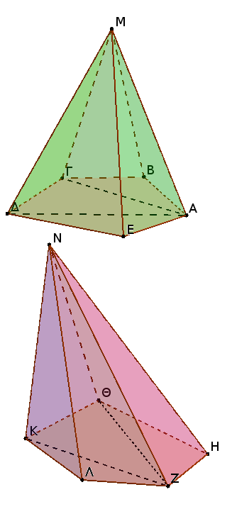
᾿Επεζεύχθωσαν γὰρ αἱ ΑΓ, ΑΔ, ΖΘ, ΖΚ. ἐπεὶ οὖν δύο πυραμίδες εἰσὶν αἱ ΑΒΓΜ, ΑΓΔΜ τριγώνους ἔχουσαι βάσεις καὶ ὕψος ἴσον, πρὸς ἀλλήλας εἰσὶν ὡς αἱ βάσεις· ἔστιν ἄρα ὡς ἡ ΑΒΓ βάσις πρὸς τὴν ΑΓΔ βάσιν, οὕτως ἡ ΑΒΓΜ πυραμὶς πρὸς τὴν ΑΓΔΜ πυραμίδα. καὶ συνθέντι ὡς ἡ ΑΒΓΔ βάσις πρὸς τὴν ΑΓΔ βάσιν, οὕτως ἡ ΑΒΓΔΜ πυραμὶς πρὸς τὴν ΑΓΔΜ πυραμίδα.
ἀλλὰ καὶ ὡς ἡ ΑΓΔ βάσις πρὸς τὴν ΑΔΕ βάσιν, οὕτως ἡ ΑΓΔΜ πυραμὶς πρὸς τὴν ΑΔΕΜ πυραμίδα. δι᾿ ἴσου ἄρα ὡς ἡ ΑΒΓΔ βάσις πρὸς τὴν ΑΔΕ βάσιν, οὕτως ἡ ΑΒΓΔΜ πυραμὶς πρὸς τὴν ΑΔΕΜ πυραμίδα. καὶ συνθέντι πάλιν, ὡς ἡ ΑΒΓΔΕ βάσις πρὸς τὴν ΑΔΕ βάσιν, οὕτως ἡ ΑΒΓΔΕΜ πυραμὶς πρὸς τὴν ΑΔΕΜ πυραμίδα.
ὁμοίως δὴ δειχθήσεται, ὅτι καὶ ὡς ἡ ΖΗΘΚΛ βάσις πρὸς τὴν ΖΗΘ βάσιν, οὕτως καὶ ἡ ΖΗΘΚΛΝ πυραμὶς πρὸς τὴν ΖΗΘΝ πυραμίδα. καὶ ἐπεὶ δύο πυραμίδες εἱσὶν αἱ ΑΔΕΜ, ΖΗΘΝ τριγώνους ἔχουσαι βάσεις καὶ ὕψος ἴσον, ἔστιν ἄρα ὡς ἡ ΑΔΕ βάσις πρὸς τὴν ΖΗΘ βάσιν, οὕτως ἡ ΑΔΕΜ πυραμὶς πρὸς τὴν ΖΗΘΝ πυραμίδα. ἀλλ᾿ ὡς ἡ ΑΔΕ βάσις πρὸς τὴν ΑΒΓΔΕ βάσιν, οὕτως ἦν ἡ ΑΔΕΜ πυραμὶς πρὸς τὴν ΑΒΓΔΕΜ πυραμίδα. καὶ δι᾿ ἴσου ἄρα ὡς ἡ ΑΒΓΔΕ βάσις πρὸς τὴν ΖΗΘ βάσιν, οὕτως ἡ ΑΒΓΔΕΜ πυραμὶς πρὸς τὴν ΖΗΘΝ πυραμίδα.
ἀλλὰ μὴν καὶ ὡς ἡ ΖΗΘ βάσις πρὸς τὴν ΖΗΘΚΛ βάσιν, οὕτως ἦν καὶ ἡ ΖΗΘΝ πυραμὶς πρὸς τὴν ΖΗΘΚΛΝ πυραμίδα, καὶ δι᾿ ἴσου ἄρα ὡς ἡ ΑΒΓΔΕ βάσις πρὸς τὴν ΖΗΘΚΛ βάσιν, οὕτως ἡ ΑΒΓΔΕΜ πυραμὶς πρὸς τὴν ΖΗΘΚΛΝ πυραμίδα· ὅπερ ἔδει δεῖξαι.
Πᾶν πρίσμα τρίγωνον ἔχον βάσιν διαιρεῖται εἰς τρεῖς πυραμίδας ἴσας ἀλλήλαις τριγώνους βάσεις ἐχούσας.
῎Εστω πρίσμα, οὗ βάσις μὲν τὸ ΑΒΓ τρίγωνον, ἀπεναντίον δὲ τὸ ΔΕΖ· λέγω, ὅτι τὸ ΑΒΓΔΕΖ πρίσμα διαιρεῖται εἰς τρεῖς πυραμίδας ἴσας ἀλλήλαις τριγώνους ἐχούσας βάσεις.
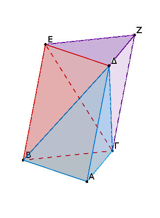
᾿Επεζεύχθωσαν γὰρ αἱ ΒΔ, ΕΓ, ΓΔ. ἐπεὶ παραλληλόγραμμόν ἐστι τὸ ΑΒΕΔ, διάμετρος δὲ αὐτὸῦ ἐστιν ἡ ΒΔ, ἴσον ἄρα ἐστι τὸ ΑΒΔ τρίγωνον τῷ ΕΒΔ τρίγωνῳ·
καὶ ἡ πυραμὶς ἄρα, ἧς βάσις μὲν τὸ ΑΒΔ τρίγωνον, κορυφὴ δὲ τὸ Γ σημεῖον, ἴση ἐστὶ πυραμίδι, ἧς βάσις μέν ἐστι τὸ ΔΕΒ τρίγωνον, κορυφὴ δὲ τὸ Γ σημεῖον.
ἀλλὰ ἡ πυραμίς, ἧς βάσις μέν ἐστι τὸ ΔΕΒ τρίγωνον, κορυφὴ δὲ τὸ Γ σημεῖον, ἡ αὐτή ἐστι πυραμίδι, ἧς βάσις μέν ἐστι τὸ ΕΒΓ τρίγωνον, κορυφὴ δὲ τὸ Δ σημεῖον· ὑπὸ γὰρ τῶν αὐτῶν ἐπιπέδων περιέχεται. καὶ πυραμὶς ἄρα, ἧς βάσις μέν ἐστι τὸ ΑΒΔ τρίγωνον, κορυφὴ δὲ τὸ Γ σημεῖον, ἴση ἐστὶ πυραμίδι, ἧς βάσις μέν ἐστι τὸ ΕΒΓ τρίγωνον, κορυφὴ δὲ τὸ Δ σημεῖον.
πάλιν, ἐπεὶ παραλληλόγραμμόν ἐστι τὸ ΖΓΒΕ, διάμετρος δέ ἐστιν αὐτοῦ ἡ ΓΕ, ἴσον ἐστὶ τὸ ΓΕΖ τρίγωνον τῷ ΓΒΕ τριγώνῳ. καὶ πυραμὶς ἄρα, ἧς βάσις μέν ἐστι τὸ ΒΓΕ τρίγωνον, κορυφὴ δὲ τὸ Δ σημεῖον, ἴση ἐστὶ πυραμίδι, ἧς βάσις μέν ἐστι τὸ ΕΓΖ τρίγωνον, κορυφὴ δὲ τὸ Δ σημεῖον. ἡ δὲ πυραμίς, ἧς βάσις μέν ἐστι τὸ ΒΓΕ τρίγωνον, κορυφὴ δὲ τὸ Δ σημεῖον, ἴση ἐδείχθη πυραμίδι, ἧς βάσις μέν ἐστι τὸ ΑΒΔ τρίγωνον, κορυφὴ δὲ τὸ Γ σημεῖον· καὶ πυραμὶς ἄρα, ἧς βάσις μέν ἐστι τὸ ΓΕΖ τρίγωνον, κορυφὴ δὲ τὸ Δ σημεῖον, ἴση ἐστὶ πυραμίδι, ἧς βάσις μέν [ἐστι] τὸ ΑΒΔ τρίγωνον, κορυφὴ δὲ τὸ Γ σημεῖον· διῄρηται ἄρα τὸ ΑΒΓΔΕΖ πρίσμα εἰς τρεῖς πυραμίδας ἴσας ἀλλήλαις τριγώνους ἐχούσας βάσεις.
Καὶ ἐπεὶ πυραμίς, ἧς βάσις μέν ἐστι τὸ ΑΒΔ τρίγωνον, κορυφὴ δὲ τὸ Γ σημεῖον, ἡ αὐτή ἐστι πυραμίδι, ἧς βάσις τὸ ΓΑΒ τρίγωνον, κορυφὴ δὲ τὸ Δ σημεῖον· ὑπὸ γὰρ τῶν αὐτῶν ἐπιπέδων περιέχονται· ἡ δὲ πυραμίς, ἧς βάσις τὸ ΑΒΔ τρίγωνον, κορυφὴ δὲ τὸ Γ σημεῖον, τρίτον ἐδείχθη τοῦ πρίσματος, οὗ βάσις τὸ ΑΒΓ τρίγωνον, ἀπεναντίον δὲ τὸ ΔΕΖ, καὶ ἡ πυραμὶς ἄρα, ἧς βάσις τὸ ΑΒΓ τρίγωνον, κορυφὴ δὲ τὸ Δ σημεῖον, τρίτον ἐστὶ τοῦ πρίσματος τοῦ ἔχοντος βάσις τὴν αὐτὴν τὸ ΑΒΓ τρίγωνον, ἀπεναντίον δὲ τὸ ΔΕΖ.
Πόρισμα᾿Εκ δὴ τούτου φανερόν, ὅτι πᾶσα πυραμὶς τρίτον μέρος ἐστὶ τοῦ πρίσματος τοῦ τὴν αὐτὴν βάσιν ἔχοντος αὐτῇ καὶ ὕψος ἴσον· ὅπερ ἔδει δεῖξαι.
Αἱ ὅμοιαι πυραμίδες καὶ τριγώνους ἔχουσαι βάσεις ἐν τριπλασίονι λόγῳ εἰσὶ τῶν ὁμολόγων πλευρῶν.
῎Εστωσαν ὅμοιαι καὶ ὁμοίως κείμεναι πυραμίδες, ὧν βάσεις μέν εἰσι τὰ ΑΒΓ, ΔΕΖ τρίγωνα, κορυφαὶ δὲ τὰ Η, Θ σημεῖα· λέγω, ὅτι ἡ ΑΒΓΗ πυραμὶς πρὸς τὴν ΔΕΖΘ πυραμίδα τριπλασίονα λόγον ἔχει ἤπερ ἡ ΒΓ πρὸς τὴν ΕΖ.
Συμπεπληρώσθω γὰρ τὰ ΒΗΜΛ, ΕΘΠΟ στερεὰ παραλληλεπίπεδα. καὶ ἐπεὶ ὁμοία ἐστὶν ἡ ΑΒΓΗ πυραμὶς τῇ ΔΕΖΘ πυραμίδι, ἵση ἄρα ἐστὶν ἡ μὲν ὑπὸ ΑΒΓ γωνία τῇ ὑπὸ ΔΕΖ γωνίᾳ, ἡ δὲ ὑπὸ ΗΒΓ τῇ ὑπὸ ΘΕΖ, ἡ δὲ ὑπὸ ΑΒΗ τῇ ὑπὸ ΔΕΘ, καί ἐστιν ὡς ἡ ΑΒ πρὸς τὴν ΔΕ, οὕτως ἡ ΒΓ πρὸς τὴν ΕΖ, καὶ ἡ ΒΗ πρὸς τὴν ΕΘ.
καὶ ἐπεί ἐστιν ὡς ἡ ΑΒ πρὸς τὴν ΔΕ, οὕτως ἡ ΒΓ πρὸς τὴν ΕΖ, καὶ περὶ ἴσας γωνίας αἱ πλευραὶ ἀνάλογόν εἰσιν, ὅμοιον ἄρα ἐστὶ τὸ ΒΜ παραλληλόγραμμον τῷ ΕΠ παραλληλογράμμῳ.
διὰ τὰ αὐτὰ δὴ καὶ τὸ μὲν ΒΝ τῷ ΕΡ ὅμοιόν ἐστι, τὸ δὲ ΒΚ τῷ ΕΞ· τὰ τρία ἄρα τὰ ΜΒ, ΒΚ, ΒΝ τρισὶ τοῖς ΕΠ, ΕΞ, ΕΡ ὅμοιά ἐστιν. ἀλλὰ τὰ μὲν τρία τὰ ΜΒ, ΒΚ, ΒΝ τρισὶ τοῖς ἀπεναντίον ἴσα τε καὶ ὅμοιά ἐστιν, τὰ δὲ τρία τὰ ΕΠ, ΕΞ, ΕΡ τρισὶ τοῖς ἀπεναντίον ἴσα τε καὶ ὅμοιά ἐστιν.
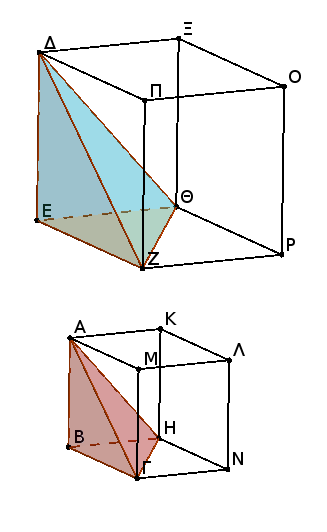
τὰ ΒΗΜΛ, ΕΘΠΟ ἄρα στερεὰ ὑπὸ ὁμοίων ἐπιπέδων ἴσων τὸ πλῆθος περιέχεται. ὅμοιον ἄρα ἐστὶ τὸ ΒΗΜΛ στερεὸν τῷ ΕΘΠΟ στερεῷ.
τὰ δὲ ὅμοια στερεὰ παραλληλεπίπεδα ἐν τριπλασίονι λόγῳ ἐστὶ τῶν ὁμολόγων πλευρῶν. τὸ ΒΗΜΛ ἄρα στερεὸν πρὸς τὸ ΕΘΠΟ στερεὸν τριπλασίονα λόγον ἔχει ἤπερ ἡ ὁμόλογος πλευρὰ ἡ ΒΓ πρὸς τὴν ὁμόλογον πλευρὰν τὴν ΕΖ.
ὡς δὲ τὸ ΒΗΜΛ στερεὸν πρὸς τὸ ΕΘΠΟ στερεόν, οὕτως ἡ ΑΒΓΗ πυραμὶς πρὸς τὴν ΔΕΖΘ πυραμίδα, ἐπειδήπερ ἡ πυραμὶς ἕκτον μέρος ἐστὶ τοῦ στερεοῦ διὰ τὸ καὶ τὸ πρίσμα ἥμισυ ὂν τοῦ στερεοῦ παραλληλεπιπέδου τριπλάσιον εἶναι τῆς πυραμίδος. καὶ ἡ ΑΒΓΗ ἄρα πυραμὶς πρὸς τὴν ΔΕΖΘ πυραμίδα τριπλασίονα λόγον ἔχει ἤπερ ἡ ΒΓ πρὸς τὴν ΕΖ· ὅπερ ἔδει δεῖξαι.
Πόρισμα᾿Εκ δὴ τούτου φανερόν, ὅτι καὶ αἱ πολυγώνους ἔχουσαι βάσεις ὅμοιαι πυραμίδες πρὸς ἀλλήλας ἐν τριπλασίονι λόγῳ εἰσὶ τῶν ὁμολόγων πλευρῶν. διαιρεθεισῶν γὰρ αὐτῶν εἰς τὰς ἐν αὐταῖς πυραμίδας τριγώνους βάσεις ἐχούσας τῷ καὶ τὰ ὅμοια πολύγωνα τῶν βάσεων εἰς ὅμοια τρίγωνα διαιρεῖσθαι καὶ ἴσα τῷ πλήθει καὶ ὁμόλογα τοῖς ὅλοις ἔσται ὡς [ἡ] ἐν τῇ ἑτέρᾳ μία πυραμὶς τρίγωνον ἔχουσα βάσιν πρὸς τὴν ἐν τῇ ἑτέρᾳ μίαν πυραμίδα τρίγωνον ἔχουσαν βάσιν, οὕτως καὶ ἅπασαι αἱ ἐν τῇ ἑτέρᾳ πυραμίδι πυραμίδες τριγώνους ἔχουσαι βάσεις πρὸς τὰς ἐν τῇ ἑτέρᾳ πυραμίδι πυραμίδας τριγώνους βάσεις ἐχούσας, τουτέστιν αὐτὴ ἡ πολύγωνον βάσιν ἔχουσα πυραμὶς πρὸς τὴν πολύγωνον βάσιν ἔχουσαν πυραμίδα. ἡ δὲ τρίγωνον βάσιν ἔχουσα πυραμὶς πρὸς τὴν τρίγωνον βάσιν ἔχουσαν ἐν τριπλασίονι λόγῳ ἐστὶ τῶν ὁμολόγον πλευρῶν· καὶ ἡ πολύγωνον ἄρα βάσιν ἔχουσα πρὸς τὴν ὁμοίαν βάσιν ἔχουσαν τριπλασίονα λόγον ἔχει ἤπερ ἡ πλευρὰ πρὸς τὴν πλευράν.
Τῶν ἴσων πυραμίδων καὶ τριγώνους βάσεις ἐχουσῶν ἀντιπεπόνθασιν αἱ βάσεις τοῖς ὕψεσιν· καὶ ὧν πυραμίδων τριγώνους βάσεις ἐχουσῶν ἀντιπεπόνθασιν αἱ βάσεις τοῖς ὕψεσιν, ἴσαι εἰσὶν ἐκεῖναι.
῎Εστωσαν γὰρ ἴσαι πυραμίδες τριγώνους βάσεις ἔχουσαι τὰς ΑΒΓ, ΔΕΖ, κορυφὰς δὲ τὰ Η, Θ σημεῖα· λέγω, ὅτι τῶν ΑΒΓΗ, ΔΕΖΘ πυραμίδων ἀντιπεπόνθασιν αἱ βάσεις τοῖς ὕψεσιν, καί ἐστιν ὡς ἡ ΑΒΓ βάσις πρὸς τὴν ΔΕΖ βάσιν, οὕτως τὸ τῆς ΔΕΖΘ πυραμίδος ὕψος πρὸς τὸ τῆς ΑΒΓΗ πυραμίδος ὕψος.
Συμπεπληρώσθω γὰρ τὰ ΒΗΜΛ, ΕΘΠΟ στερεὰ παραλληλεπίπεδα. καὶ ἐπεὶ ἴση ἐστὶν ἡ ΑΒΓΗ πυραμὶς τῇ ΔΕΖΘ πυραμίδι, καί ἐστι τῆς μὲν ΑΒΓΗ πυραμίδος ἑξαπλάσιον τὸ ΒΗΜΛ στερεόν, τῆς δὲ ΔΕΖΘ πυραμίδος ἑξαπλάσιον τὸ ΕΘΠΟ στερεόν, ἴσον ἄρα ἐστὶ τὸ ΒΗΜΛ στερεὸν τῷ ΕΘΠΟ στερεῷ.
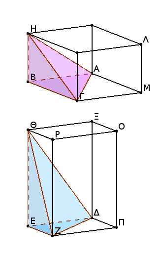
τῶν δὲ ἴσων στερεῶν παραλληλεπιπέδων ἀντιπεπόνθασιν αἱ βάσεις τοῖς ὕψεσιν· ἔστιν ἄρα ὡς ἡ ΒΜ βάσις πρὸς τὴν ΕΠ βάσιν, οὕτως τὸ τοῦ ΕΘΠΟ στερεοῦ ὕψος πρὸς τὸ τοῦ ΒΗΜΛ στερεοῦ ὕψος. ἀλλ᾿ ὡς ἡ ΒΜ βάσις πρὸς τὴν ΕΠ, οὕτως τὸ ΑΒΓ τρίγωνον πρὸς τὸ ΔΕΖ τρίγωνον. καὶ ὡς ἄρα τὸ ΑΒΓ τρίγωνον πρὸς τὸ ΔΕΖ τρίγωνον, οὕτως τὸ τοῦ ΕΘΠΟ στερεοῦ ὕψος πρὸς τὸ τοῦ ΒΗΜΛ στερεοῦ ὕψος.
ἀλλὰ τὸ μὲν τοῦ ΕΘΠΟ στερεοῦ ὕψος τὸ αὐτὸ ἐστι τῷ τῆς ΔΕΖΘ πυραμίδος ὕψει, τὸ δὲ τοῦ ΒΗΜΛ στερεοῦ ὕψος τὸ αὐτό ἐστι τῷ τῆς ΑΒΓΗ πυραμίδος ὕψει· ἔστιν ἄρα ὡς ἡ ΑΒΓ βάσις πρὸς τὴν ΔΕΖ βάσιν, οὕτως τὸ τῆς ΔΕΖΘ πυραμίδος ὕψος πρὸς τὸ τῆς ΑΒΓΗ πυραμίδος ὕψος.
τῶν ΑΒΓΗ, ΔΕΖΘ ἄρα πυραμίδων ἀντιπεπόνθασιν αἱ βάσεις τοῖς ὕψεσιν.
᾿Αλλὰ δὴ τῶν ΑΒΓΗ, ΔΕΖΘ πυραμίδων ἀντιπεπονθέτωσαν αἱ βάσεις τοῖς ὕψεσιν, καὶ ἔστω ὡς ἡ ΑΒΓ βάσις πρὸς τὴν ΔΕΖ βάσιν, οὕτως τὸ τῆς ΔΕΖΘ πυραμίδος ὕψος πρὸς τὸ τῆς ΑΒΓΗ πυραμίδος ὕψος· λέγω, ὅτι ἴση ἐστὶν ἡ ΑΒΓΗ πυραμὶς τῇ ΔΕΖΘ πυραμίδι.
Τῶν γὰρ αὐτῶν κατασκευασθέντων, ἐπεί ἐστιν ὡς ἡ ΑΒΓ βάσις πρὸς τὴν ΔΕΖ βάσιν, οὕτως τὸ τῆς ΔΕΖΘ πυραμίδος ὕψος πρὸς τὸ τῆς ΑΒΓΗ πυραμίδος ὕψος, ἀλλ᾿ ὡς ἡ ΑΒΓ βάσις πρὸς τὴν ΔΕΖ βάσιν, οὕτως τὸ ΒΜ παραλληλόγραμμον πρὸς τὸ ΕΠ παραλληλόγραμμον, καὶ ὡς ἄρα τὸ ΒΜ παραλληλόγραμμον πρὸς τὸ ΕΠ παραλληλόγραμμον, οὕτως τὸ τῆς ΔΕΖΘ πυραμίδος ὕψος πρὸς τὸ τῆς ΑΒΓΗ πυραμίδος ὕψος.
ἀλλὰ τὸ [μὲν] τῆς ΔΕΖΘ πυραμίδος ὕψος τὸ αὐτό ἐστι τῷ τοῦ ΕΘΠΟ παραλληλεπιπέδου ὕψει, τὸ δὲ τῆς ΑΒΓΗ πυραμίδος ὕψος τὸ αὐτό ἐστι τῷ τοῦ ΒΗΜΛ παραλληλεπιπέδου ὕψει· ἔστιν ἄρα ὡς ἡ ΒΜ βάσις πρὸς τὴν ΕΠ βάσιν, οὕτως τὸ τοῦ ΕΘΠΟ παραλληλεπιπέδου ὕψος πρὸς τὸ τοῦ ΒΗΜΛ παραλληλεπιπέδου ὕψος.
ὧν δὲ στερεῶν παραλληλεπιπέδων ἀντιπεπόνθασιν αἱ βάσεις τοῖς ὕψεσιν, ἴσα ἐστὶν ἐκεῖνα· ἴσον ἄρα ἐστὶ τὸ ΒΗΜΛ στερεὸν παραλληλεπίπεδον τῷ ΕΘΠΟ στερεῷ παραλληλεπιπέδῳ. καί ἐστι τοῦ μὲν ΒΗΜΛ ἕκτον μέρος ἡ ΑΒΓΗ πυραμίς, τοῦ δὲ ΕΘΠΟ παραλληλεπιπέδου ἕκτον μέρος ἡ ΔΕΖΘ πυραμίς· ἴση ἄρα ἡ ΑΒΓΗ πυραμὶς τῇ ΔΕΖΘ πυραμίδι.
Τῶν ἄρα ἴσων πυραμίδων καὶ τριγώνους βάσεις ἐχουσῶν ἀντιπεπόνθασιν αἱ βάσεις τοῖς ὕψεσιν· καὶ ὧν πυραμίδων τριγώνους βάσεις ἐχουσῶν ἀντιπεπόνθασιν αἱ βάσεις τοῖς ὕψεσιν, ἴσαι εἰσὶν ἐκεῖναι· ὅπερ ἔδει δεῖξαι.
Πᾶς κῶνος κυλίνδρου τρίτον μέρος ἐστὶ τοῦ τὴν αὐτὴν βάσιν ἔχοντος αὐτῷ καὶ ὕψος ἴσον.
᾿Εχέτω γὰρ κῶνος κυλίνδρῷ βάσιν τε τὴν αὐτὴν τὸν ΑΒΓΔ κύκλον καὶ ὕψος ἴσον· λέγω, ὅτι ὁ κῶνος τοῦ κυλίνδρου τρίτον ἐστὶ μέρος, τουτέστιν ὅτι ὁ κύλινδρος τοῦ κώνου τριπλασίων ἐστίν.
Εἰ γὰρ μή ἐστιν ὁ κύλινδρος τοῦ κώνου τριπλασίων, ἔσται ὁ κύλινδρος τοῦ κώνου ἤτοι μείζων ἢ τριπλασίων ἢ ἐλάσσων ἢ τριπλασίων.
ἔστω πρότερον μείζων ἢ τριπλασίων, καὶ ἐγγεγράφθω εἰς τὸν ΑΒΓΔ κύκλον τετράγωνον τὸ ΑΒΓΔ· τὸ δὴ ΑΒΓΔ τετράγωνον μείζόν ἐστιν ἢ τὸ ἥμισυ τοῦ ΑΒΓΔ κύκλου. καὶ ἀνεστάτω ἀπὸ τοῦ ΑΒΓΔ τετραγώνου πρίσμα ἰσοϋψὲς τῷ κυλίνδρῳ. τὸ δὴ ἀνιστάμενον πρίσμα μεῖζόν ἐστιν ἢ τὸ ἥμισυ τοῦ κυλίνδου, ἐπειδήπερ κἂν περὶ τὸν ΑΒΓΔ κύκλον τετράγωνον περιγράψωμεν, τὸ ἐγγεγραμμένον εἰς τὸν ΑΒΓΔ κύκλον τετράγωνον ἥμισύ ἐστι τοῦ περιγεγραμμένου· καί ἐστι τὰ ἀπ᾿ αὐτῶν ἀνιστάμενα στερεὰ παραλληλεπίπεδα πρίσματα ἰσοϋψῆ· τὰ δὲ ὑπὸ τὸ αὐτὸ ὕψος ὄντα στερεὰ παραλληλεπίπεδα πρὸς ἄλληλά ἐστιν ὡς αἱ βάσεις· καὶ τὸ ἐπὶ τοῦ ΑΒΓΔ ἄρα τετραγώνου ἀνασταθὲν πρίσμα ἥμισύ ἐστι τοῦ ἀνασταθέντος πρίσματος ἀπὸ τοῦ περὶ τὸν ΑΒΓΔ κύκλον περιγραφέντος τετραγώνου· καί ἐστιν ὁ κύλινδρος ἐλάττων τοῦ πρίσματος τοῦ ἀνατραθέντος ἀπὸ τοῦ περὶ τὸν ΑΒΓΔ κύκλον περιγραφέντος τετραγώνου· τὸ ἄρα πρίσμα τὸ ἀνασταθὲν ἀπὸ τοῦ ΑΒΓΔ τετραγώνου ἰσοϋψὲς τῷ κυλίνδρῳ μεῖζόν ἐστι τοῦ ἡμίσεως τοῦ κυλίνδρου.
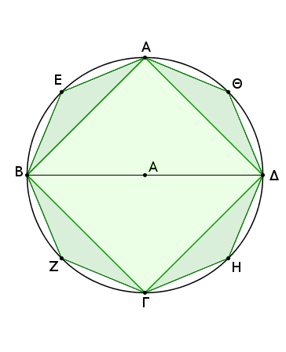
τετμήσθωσαν αἱ ΑΒ, ΒΓ, ΓΔ, ΔΑ περιφέρειαι δίχα κατὰ τὰ Ε, Ζ, Η, Θ σημεῖα, καὶ ἐπεζεύχθωσαν αἱ ΑΕ, ΕΒ, ΒΖ, ΖΓ, ΓΗ, ΗΔ, ΔΘ, ΘΑ· καὶ ἕκαστον ἄρα τῶν ΑΕΒ, ΒΖΓ, ΓΗΔ, ΔΘΑ τριγώνων μειζόν ἐστιν ἢ τὸ ἥμισυ τοῦ καθ᾿ ἑαυτὸ τμήματος τοῦ ΑΒΓΔ κύκλου, ὡς ἔμπροσθεν ἐδείκνυμεν.
ἀνεστάτω ἐφ᾿ ἑκάστου τῶν ΑΕΒ, ΒΖΓ, ΓΗΔ, ΔΘΑ τριγώνων πρίσματα ἰσοϋψῆ τῷ κυλίνδρῳ· καὶ ἕκαστον ἄρα τῶν ἀνασταθέντων πρισμάτων μεῖζόν ἐστιν ἢ τὸ ἥμισυ μέρος τοῦ καθ᾿ ἑαυτὸ τμήματος τοῦ κυλίνδρου, ἐπειδήπερ ἐὰν διὰ τῶν Ε, Ζ, Η, Θ σημείων παραλλήλους ταῖς ΑΒ, ΒΓ, ΓΔ, ΔΑ ἀγάγωμεν, καὶ συμπληρώσωμεν τὰ ἐπὶ τῶν ΑΒ, ΒΓ, ΓΔ, ΔΑ παραλληλόγραμμα, καὶ ἀπ᾿ αὐτῶν ἀναστήσωμεν στερεὰ παραλληλεπίπεδα ἰσοϋψῆ τῷ κυλίνδρῳ, ἑκάστου τῶν ἀνασταθέντων ἡμίση ἐστὶ τὰ πρίσματα τὰ ἐπὶ τῶν ΑΕΒ, ΒΖΓ, ΓΗΔ, ΔΘΑ τριγώνων· καί ἐστι τὰ τοῦ κυλίνδρου τμήματα ἐλάττονα τῶν ἀνασταθέντων στερεῶν παραλληλεπιπέδων· ὥστε καὶ τὰ ἐπὶ τῶν ΑΕΒ, ΒΖΓ, ΓΗΔ, ΔΘΑ τριγώνων πρίσματα μείζονά ἐστιν ἢ τὸ ἥμισυ τῶν καθ᾿ ἑαυτὰ τοῦ κυλίνδρου τμημάτων.
τέμνοντες δὴ τὰς ὑπολειπομένας περιφερείας δίχα καὶ ἐπιζευγνύντες εὐθείας καὶ ἀνιστάντες ἐφ᾿ ἑκάσου τῶν τριγώνων πρίσματα ἰσοϋψῆ τῷ κυλίνδρῳ καὶ τοῦτο ἀεὶ ποιοῦντες καταλείψομέν τινα ἀποτμήματα τοῦ κυλίνδρου, ἃ ἔσται ἐλάττονα τῆς ὑπεροχῆς, ᾗ ὑπερέχει ὁ κυλίνδρος τοῦ τριπλασίου τοῦ κώνου.
λελείφθω, καὶ ἔστω τὰ ΑΕ, ΕΒ, ΒΖ, ΖΓ, ΓΗ, ΗΔ, ΔΘ, ΘΑ· λοιπὸν ἄρα τὸ πρίσμα, οὗ βάσις μὲν τὸ ΑΕΒΖΓΗΔΘ πολύγωνον, ὕψος δὲ τὸ αὐτὸ τῷ κυλίνδρῷ, μεῖζόν ἐστὶν ἢ τριπλάσιον τοῦ κώνου. ἀλλὰ τὸ πρίσμα, οὗ βάσις μὲν ἐστὶ τὸ ΑΕΒΖΓΗΔΘ πολύγωνον, ὕψος δὲ τὸ αὐτὸ τῷ κυλίνδρῳ, τριπλάσιόν ἐστι τῆς πυραμίδος, ἧς βάσις μέν ἐστι τὸ ΑΕΒΖΓΗΔΘ πολύγωνον, κορυφὴ δὲ ἡ αὐτὴ τῷ κώνῳ· καὶ ἡ πυραμὶς ἄρα, ἧς βάσις μέν [ἐστι] τὸ ΑΕΒΖΓΗΔΘ πολύγωνον, κορυφὴ δὲ ἡ αὐτὴ τῷ κώνῳ, μείζων ἐστὶ τοῦ κώνου τοῦ βάσιν ἔχοντες τὸν ΑΒΓΔ κύκλον. ἀλλὰ καὶ ἐλάττων· ἐμπεριέχεται γὰρ ὑπ᾿ αὐτοῦ· ὅπερ ἐστὶν ἀδύνατον. οὐκ ἄρα ἐστὶν ὁ κύλινδρος τοῦ κώνου μεῖζων ἢ τριπλάσιος.
Λέγω δή, ὅτι οὐδὲ ἐλάττων ἐστὶν ἢ τριπλάσιος ὁ κύλινδρος τοῦ κώνου. Εἰ γὰρ δυνατόν, ἔστω ἐλάττων ἢ τριπλάσιος ὁ κύλινδρος τοῦ κώνου· ἀνάπαλιν ἄρα ὁ κῶνος τοῦ κυλίνδρου μεῖζων ἐστὶν ἢ τρίτον μέρος.
ἐγγεγράφθω δὴ εἰς τὸν ΑΒΓΔ κύκλον τετράγωνον τὸ ΑΒΓΔ· τὸ ΑΒΓΔ ἄρα τετράγωνον μεῖζόν ἐστιν ἢ τὸ ἥμισυ τοῦ ΑΒΓΔ κύκλου. καὶ ἀνεστάτω ἀπὸ τοῦ ΑΒΓΔ τετραγώνου πυραμὶς τὴν αὐτὴν κορυφὴν ἔχουσα τῷ κώνῳ· ἠ ἄρα ἀνασταθεῖσα πυραμὶς μείζων ἐστὶν ἢ τὸ ἥμισυ μέρος τοῦ κώνου, ἐπειδήπερ, ὡς ἕμπροσθεν ἐδείκνυμεν, ὅτι ἐὰν περὶ τὸν κύκλον τετράγωνον περιγράψωμεν, ἔσται τὸ ΑΒΓΔ τετράγωνον ἥμισυ τοῦ περὶ τὸν κύκλον περιγεγραμμένου τετραγώνου· καὶ ἐὰν ἀπὸ τῶν τετραγώνων στερεὰ παραλληλεπίπεδα ἀναστήσωμεν ἰσοϋψῆ τῷ κώνῳ, ἂ καὶ καλεῖται πρίσματα, ἔσται τὸ ἀνασταθὲν ἀπὸ τοῦ ΑΒΓΔ τετραγώνου ἥμισυ τοῦ ἀνασταθέντος ἀπὸ τοῦ περὶ τὸν κύκλον περιγραφέντος τετραγώνου· πρὸς ἄλληλα γάρ εἰσιν ὡς αἱ βάσεις. ὥστε καὶ τὰ τρίτα· καὶ πυραμὶς ἄρα, ἧς βάσις τὸ ΑΒΓΔ τετράγωνον, ἥμισύ ἐστι τῆς πυραμίδος τῆς ἀνασταθείσης ἀπὸ τοῦ περὶ τὸν κύκλον περιγραφέντος τετραγώνου.
καί ἐστι μείζων ἡ πυραμὶς ἡ ἀνασταθεῖσα ἀπὸ τοῦ περὶ τὸν κύκλον τετραγώνου τοῦ κώνου· ἐμπεριέχει γὰρ αὐτόν. ἡ ἄρα πυραμὶς, ἧς βάσις τὸ ΑΒΓΔ τετράγωνον, κορυφὴ δὲ ἡ αὐτὴ τῷ κώνῳ, μείζων ἐστὶν ἢ τὸ ἥμισυ τοῦ κώνου. τετμήσθωσαν αἱ ΑΒ, ΒΓ, ΓΔ, ΔΑ περιφέρειαι δίχα κατὰ τὰ Ε, Ζ, Η, Θ σημεῖα, καὶ ἐπεζεύχθωσαν αἱ ΑΕ, ΕΒ, ΒΖ, ΖΓ, ΓΗ, ΗΔ, ΔΘ, ΘΑ· καὶ ἕκαστον ἄρα τῶν ΑΕΒ, ΒΖΓ, ΓΗΔ, ΔΘΑ τριγώνων μεῖζόν ἐστιν ἢ τὸ ἥμισυ μέρος του καθ᾿ ἑαυτὸ τμήματος τοῦ ΑΒΓΔ κύκλου.
καὶ ἀνεστάτωσαν ἐφ᾿ ἑκάστου τῶν ΑΕΒ, ΒΖΓ, ΓΗΔ, ΔΘΑ τριγώνων πυραμίδες τὴν αὐτὴν κορυφὴν ἔχουσαι τῷ κώνῳ· καὶ ἑκάστη ἄρα τῶν ἀνασταθεισῶν πυραμίδων κατὰ τὸν αὐτὸν τρόπον μείζων ἐστὶν ἢ τὸ ἥμισυ μέρος τοῦ καθ᾿ ἑαυτὴν τμήματος τοῦ κώνου.
τέμνοντες δὴ τὰς ὑπολειπομένας περιφερείας δίχα καὶ ἐπιζευγνύντες εὐθείας καὶ ἀνιστάντες ἐφ᾿ ἑκάστου τῶν τριγώνων πυραμίδα τὴν αὐτὴν κορυφὴν ἔχουσαν τῷ κώνῳ καὶ τοῦτο ἀεὶ ποιοῦτες καταλείψομέν τινα ἀποτμήματα τοῦ κώνου, ἃ ἔσται ἐλάττονα τῆς ὑπεροχῆς, ᾗ ὑπερέχει ὁ κῶνος τοῦ τρίτου μέρους τοῦ κυλίνδρου.
λελείφθω, καὶ ἔστω τὰ ἐπὶ τῶν ΑΕ, ΕΒ, ΒΖ, ΖΓ, ΓΗ, ΗΔ, ΔΘ, ΘΑ· λοιπὴ ἄρα ἡ πυραμίς, ἧς βάσις μέν ἐστι τὸ ΑΕΒΖΓΗΔΘ πολύγωνον, κορυφὴ δὲ ἡ αὐτὴ τῷ κώνῳ, μείζων ἐστὶν ἢ τρίτον μέρος τοῦ κυλίνδρου. ἀλλ᾿ ἡ πυραμίς, ἧς βάσις μέν ἐστι τὸ ΑΕΒΖΓΗΔΘ πολύγωνον, κορυφὴ δὲ ἡ αυτὴ τῷ κώνῳ, τρίτον ἐστὶ μέρος τοῦ πρίσματος, οὗ βάσις μέν ἐστι τὸ ΑΕΒΖΓΗΔΘ πολύγωνον, ὕψος δὲ τὸ αὐτὸ τῷ κυλίνδρῳ· τὸ ἄρα πρίσμα, οὗ βάσις μέν ἐστι τὸ ΑΕΒΖΓΗΔΘ πολύγωνον, ὕψος δὲ τὸ αὐτὸ τῷ κυλίνδρῳ, μεῖζόν ἐστι τοῦ κυλίνδρου, οὗ βάσις ἐστὶν ὁ ΑΒΓΔ κύκλος. ἀλλὰ καὶ ἔλαττον· ἐμπεριέχεται γὰρ ὑπ᾿ αὐτοῦ· ὅπερ ἐστὶν ἀδύνατον.
οὐκ ἄρα ὁ κύλινδρος τοῦ κώνου ἐλάττων ἐστὶν ἢ τριπλάσιος. ἐδείχθη δέ, ὅτι οὐδὲ μείζων ἢ τριπλάσιος· τριπλάσιος ἄρα ὁ κύλινδρος τοῦ κώνου· ὥστε ὁ κῶνος τρίτον ἐστὶ μέρος τοῦ κυλίνδρου. Πᾶς ἄρα κῶνος κυλίνδρου τρίτον μέρος ἐστὶ τοῦ τὴν αὐτὴν βάσιν ἔχοντος αὐτῷ καὶ ὕψος ἴσον· ὅπερ ἔδει δεῖξαι.
Οἱ ὑπο τὸ αὐτὸ ὕψος ὄντες κῶνοι καὶ κύλινδροι πρὸς ἀλλήλους εἰσὶν ὡς αἱ βάσεις.
῎Εστωσαν ὑπὸ τὸ αὐτὸ ὕψος κῶνοι καὶ κύλινδροι, ὧν βάσεις μὲν [εἰσιν] οἱ ΑΒΓΔ, ΕΖΗΘ κύκλοι, ἄξονες δὲ οἱ ΚΛ, ΜΝ, διάμετροι δὲ τῶν βάσεων αἱ ΑΓ, ΕΗ· λέγω, ὅτι ἐστὶν ὡς ὁ ΑΒΓΔ κύκλος πρὸς τὸν ΕΖΗΘ κύκλον, οὕτως ὁ ΑΛ κῶνος πρὸς τὸν ΕΝ κῶνον.
Εἰ γὰρ μή, ἔσται ὡς ὁ ΑΒΓΔ κύκλος πρὸς τὸν ΕΖΗΘ κύκλον, οὕτως ὁ ΑΛ κῶνος ἤτοι πρὸς ἔλασσόν τι τοῦ ΕΝ κώνου στερεὸν ἢ πρὸς μεῖζον.
ἔστω πρότερον πρὸς ἔλασσον τὸ Ξ, καὶ ᾧ ἔλασσόν ἐστι τὸ Ξ στερεὸν τοῦ ΕΝ κώνου, ἐκείνῳ ἴσον ἔστω τὸ Ψ στερεόν· ὁ ΕΝ κῶνος ἄρα ἴσος ἐστὶ τοῖς Ξ, Ψ στερεοῖς.
ἐγγεγράφθω εἰς τὸν ΕΖΗΘ κύκλον τετράγωνον τὸ ΕΖΗΘ· τὸ ἄρα τετράγωνον μεῖζόν ἐστιν ἢ τὸ ἥμισυ τοῦ κύκλου. ἀνεστάτω ἀπὸ τοῦ ΕΖΗΘ τετραγώνου πυραμὶς ἰσοϋψὴς τῷ κώνῳ· ἡ ἄρα ἀνασταθεῖσα πυραμὶς μείζων ἐστὶν ἢ τὸ ἥμισυ τοῦ κώνου, ἐπειδήπερ ἐὰν περιγράψωμεν περὶ τὸν κύκλον τετράγωνον, καὶ ἀπ᾿ αὐτοῦ ἀναστήσωμεν πυραμίδα ἰσοϋψῆ τῷ κώνῳ, ἡ ἐγγραφεῖσα πυραμὶς ἥμισύ ἐστι τῆς περιγραφείσης· πρὸς ἀλλήλας γάρ εἰσιν ὡς αἱ βάσεις· ἐλάττων δὲ ὁ κῶνος τῆς περιγραφείσης πυραμίδος.
τετμήσθωσαν αἱ ΕΖ, ΖΗ, ΗΘ, ΘΕ περιφέρειαι δίχα κατὰ τὰ Ο, Π, Ρ, Σ σημεῖα, καὶ ἐπεζεύχθωσαν αἱ ΘΟ, ΟΕ, ΕΠ, ΠΖ, ΖΡ, ΡΗ, ΗΣ, ΣΘ. ἕκαστον ἄρα τῶν ΘΟΕ, ΕΠΖ, ΖΡΗ, ΗΖΘ τριγώνων μεῖζόν ἐστιν ἢ τὸ ἥμισυ τοῦ καθ᾿ ἑαυτὸ τμήματος τοῦ κύκλου.
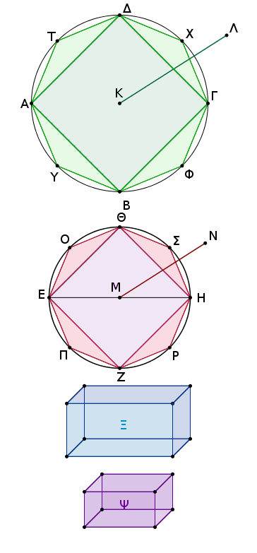
ἀνεστάτω ἐφ᾿ ἑκάστου τῶν ΘΟΕ, ΕΠΖ, ΖΡΗ, ΗΣΘ τριγώνων πυραμὶς ἰσοϋψὴς τῷ κώνῳ· καὶ ἑκάστη ἄρα τῶν ἀνασταθεισῶν πυραμίδων μείζων ἐστὶν ἢ τὸ ἥμισυ τοῦ καθ᾿ ἑαυτὴν τμήματος τοῦ κώνου.
τέμνοντες δὴ τὰς ὑπολειπομένας περιφερείας δίχα καὶ ἐπιζευγνύντες εὐθείας καὶ ἀνιστάντες ἐπὶ ἑκάστου τῶν τριγώνων πυραμίδας ἰσοϋψεῖς τῷ κώνῳ καὶ ἀεὶ τοῦτο ποιοῦντες καταλείψομέν τινα ἀποτμήματα τοῦ κώνου, ἃ ἔσται ἐλάσσονα τοῦ Ψ στερεοῦ.
λελείφθω, καὶ ἔστω τὰ ἐπὶ τῶν ΘΟΕ, ΕΠΖ, ΖΡΗ, ΗΣΘ· λοιπὴ ἄρα ἡ πυραμίς, ἧς βάσις τὸ ΘΟΕΠΖΡΗΣ πολύγωνον, ὕψος δὲ τὸ αὐτὸ τῷ κώνῳ, μείζων ἐστὶ τοῦ Ξ στερεοῦ.
ἐγγεγράφθω καὶ εἰς τὸν ΑΒΓΔ κύκλον τῷ ΘΟΕΠΖΡΗΣ πολυγώνῳ ὅμοιόν τε καὶ ὁμοίως κείμενον πολύγωνον τὸ ΔΤΑΥΒΦΓΧ, καὶ ἀνεστάτω ἐπ᾿ αὐτοῦ πυραμὶς ἰσοϋψὴς τῷ ΑΛ κώνῳ.
ἐπεὶ οὖν ἐστιν ὡς τὸ ἀπὸ τῆς ΑΓ πρὸς τὸ ἀπὸ τῆς ΕΗ, οὕτως τὸ ΔΤΑΥΒΦΓΧ πολύγωνον πρὸς τὸ ΘΟΕΠΖΡΗΣ πολύγωνον, ὡς δὲ τὸ ἀπὸ τῆς ΑΓ πρὸς τὸ ἀπὸ τῆς ΕΗ, οὕτως ὁ ΑΒΓΔ κύκλος πρὸς τὸν ΕΖΗΘ κύκλον, καὶ ὡς ἄρα ὁ ΑΒΓΔ κύκλος πρὸς τὸν ΕΖΗΘ κύκλον, οὕτως τὸ ΔΤΑΥΒΦΓΧ πολύγωνον πρὸς τὸ ΘΟΕΠΖΡΗΣ πολύγωνον.
ὡς δὲ ὁ ΑΒΓΔ κύκλος πρὸς τὸν ΕΖΗΘ κύκλον, οὕτως ὁ ΑΛ κῶνος πρὸς τὸ Ξ στερεόν, ὡς δὲ τὸ ΔΤΑΥΒΦΓΧ πολύγωνον πρὸς τὸ ΘΟΕΠΖΡΗΣ πολύγωνον, οὕτως ἡ πυραμίς, ἧς βάσις μὲν τὸ ΔΤΑΥΒΦΓΧ πολύγωνον, κορυφὴ δὲ τὸ Λ σημεῖον, πρὸς τὴν πυραμίδα, ἧς βάσις μὲν τὸ ΘΟΕΠΖΡΗΣ πολύγωνον, κορυφὴ δὲ τὸ Ν σημεῖον. καὶ ὡς ἄρα ὁ ΑΛ κῶνος πρὸς τὸ Ξ στερεόν, οὕτως ἡ πυραμίς, ἧς βάσις μὲν τὸ ΔΤΑΥΒΦΓΧ πολύγωνον, κορυφὴ δὲ τὸ Λ σημεῖον, πρὸς τὴν πυραμίδα, ἧς βάσις μὲν τὸ ΘΟΕΠΖΡΗΣ πολύγωνον, κορυφὴ δὲ τὸ Ν σημεῖον· ἐναλλὰξ ἄρα ἐστὶν ὡς ὁ ΑΛ κῶνος πρὸς τὴν ἐν αὐτῷ πυραμίδα, οὕτως τὸ Ξ στερεὸν πρὸς τὴν ἐν τῷ ΕΝ κώνῳ πυραμίδα. μείζων δὲ ὁ ΑΛ κῶνος τῆς ἐν αὐτῷ πυραμίδος· μεῖζον ἄρα καὶ τὸ Ξ στερεὸν τῆς ἐν τῷ ΕΝ κώνῳ πυραμίδος. ἀλλὰ καὶ ἔλασσον· ὅπερ ἄτοπον.
οὐκ ἄρα ἐστὶν ὡς ὁ ΑΒΓΔ κύκλος πρὸς τὸν ΕΖΗΘ κύκλον, οὕτως ὁ ΑΛ κῶνος πρὸς ἔλασσόν τι τοῦ ΕΝ κώνου στερεόν. ὁμοίως δὲ δείξομεν, ὅτι οὐδέ ἐστιν ὡς ὁ ΕΖΗΘ κύκλος πρὸς τὸν ΑΒΓΔ κύκλον, οὕτως ὁ ΕΝ κῶνος πρὸς ἔλασσόν τι τοῦ ΑΛ κώνου στερεόν.
Λέγω δή, ὅτι οὐδέ ἐστιν ὡς ὁ ΑΒΓΔ κύκλος πρὸς τὸν ΕΖΗΘ κύκλον, οὕτως ὁ ΑΛ κῶνος πρὸς μεῖζόν τι τοῦ ΕΝ κώνου στερεόν.
Εἰ γὰρ δυνατόν, ἕστω πρὸς μεῖζον τὸ Ξ· ἀνάπαλιν ἄρα ἐστὶν ὡς ὁ ΕΖΗΘ κύκλος πρὸς τὸν ΑΒΓΔ κύκλον, οὕτως τὸ Ξ στερεὸν πρὸς τὸν ΑΛ κῶνον.
ἀλλ᾿ ὡς τὸ Ξ στερεὸν πρὸς τὸν ΑΛ κῶνον, οὕτως ὁ ΕΝ κῶνος πρὸς ἔλασσόν τι τοῦ ΑΛ κώνου στερεόν· καὶ ὡς ἄρα ὁ ΕΖΗΘ κύκλος πρὸς τὸν ΑΒΓΔ κύκλον, οὕτως ὁ ΕΝ κῶνος πρὸς ἔλασσόν τι τοῦ ΑΛ κώνου στερεόν· ὅπερ ἀδύνατον ἐδείχθη.
οὐκ ἄρα ἐστὶν ὡς ὁ ΑΒΓΔ κύκλος πρὸς τὸν ΕΖΗΘ κύκλον, οὕτως ὁ ΑΛ κῶνος πρὸς μεῖζόν τι τοῦ ΕΝ κώνου στερεόν. ἐδείχθη δέ, ὅτι οὐδὲ πρὸς ἔλασσον· ἔστιν ἄρα ὡς ὁ ΑΒΓΔ κύκλος πρὸς τὸν ΕΖΗΘ κύκλον, οὕτως ὁ ΑΛ κῶνος πρὸς τὸν ΕΝ κῶνον.
᾿Αλλ᾿ ὡς ὁ κῶνος πρὸς τὸν κῶνον, ὁ κύλινδρος πρὸς τὸν κύλινδρον· τριπλασίων γὰρ ἑκάτερος ἑκατέρου. καὶ ὡς ἄρα ὁ ΑΒΓΔ κύκλος πρὸς τὸν ΕΖΗΘ κύκλον, οὕτως οἱ ἐπ᾿ αὐτῶν ἰσοϋψεῖς. Οἱ ἄρα ὑπὸ τὸ αὐτὸ ὕψος ὄντες κῶνοι καὶ κύλινδροι πρὸς ἀλλήλους εἰσὶν ὡς αἱ βάσεις· ὅπερ ἔδει δεῖξαι.
Οἱ ὅμοιοι κῶνοι καὶ κύλινδροι πρὸς ἀλλήλους ἐν τριπλασίονι λόγῳ εἰσὶ τῶν ἐν ταῖς βάσεσι διαμέτρων.
῎Εστωσαν ὅμοιοι κῶνοι καὶ κύλινδροι, ὧν βάσεις μὲν οἱ ΑΒΓΔ, ΕΖΗΘ κύκλοι, διάμετροι δὲ τῶν βάσεων αἱ ΒΔ, ΖΘ, ἄξονες δὲ τῶν κώνων καὶ κυλίνδρων οἱ ΚΛ, ΜΝ· λέγω, ὅτι ὁ κῶνος, οὗ βάσις μέν [ἐστιν] ὁ ΑΒΓΔ κύκλος, κορυφὴ δὲ τὸ Λ σημεῖον, πρὸς τὸν κῶνον, οὗ βάσις μέν [ἐστιν] ὁ ΕΖΗΘ κύκλος, κορυφὴ δὲ τὸ Ν σημεῖον, τριπλασίονα λόγον ἔχει ἤπερ ἡ ΒΔ πρὸς τὴν ΖΘ.
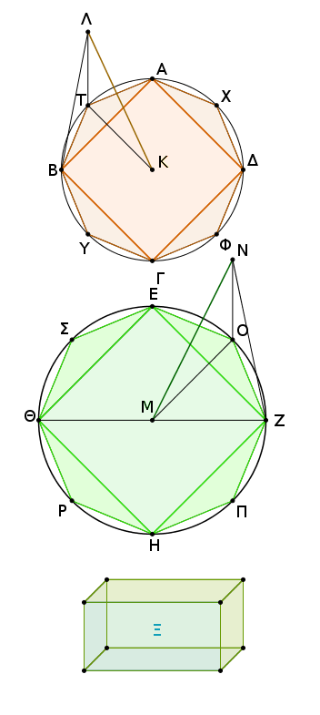
Εἰ γὰρ μὴ ἔχει ὁ ΑΒΓΔΛ κῶνος πρὸς τὸν ΕΖΗΘΝ κῶνον πριπλασίονα λόγον ἤπερ ἡ ΒΔ πρὸς τὴν ΖΘ, ἕξει ὁ ΑΒΓΔΛ κῶνος ἢ πρὸς ἔλασσόν τι τοῦ ΕΖΗΘΝ κώνου στερεὸν τριπλασίονα λόγον ἢ πρὸς μεῖζον.
ἐχέτω πρότερον πρὸς ἔλασσον τὸ Ξ, καὶ ἐγγεγράφθω εἰς τὸν ΕΖΗΘ κύκλον τετράγωνον τὸ ΕΖΗΘ· τὸ ἄρα ΕΖΗΘ τετράγωνον μεῖζόν ἐστιν ἢ τὸ ἥμισυ τοῦ ΕΖΗΘ κύκλου. καὶ ἀνεστάτω ἐπὶ τοῦ ΕΖΗΘ τετραγώνου πυραμὶς τὴν αὐτὴν κορυφὴν ἔχουσα τῷ κώνῳ· ἡ ἄρα ἀνασταθεῖσα πυραμὶς μείζων ἐστὶν ἢ τὸ ἥμισυ μέρος τοῦ κώνου.
τετμήσθωσαν δὴ αἱ ΕΖ, ΖΗ, ΗΘ, ΘΕ περιφέρειαι δίχα κατὰ τὰ Ο, Π, Ρ, Σ σημεῖα, καὶ ἐπεζεύχθωσαν αἱ ΕΟ, ΟΖ, ΖΠ, ΠΗ, ΗΡ, ΡΘ, ΘΣ, ΣΕ. καὶ ἕκαστον ἄρα τῶν ΕΟΖ, ΖΠΗ, ΗΡΘ, ΘΣΕ τριγώνων μεῖζόν ἐστιν ἢ τὸ ἥμισυ μέρος τοῦ καθ᾿ ἑαυτὸ τμήματος τοῦ ΕΖΗΘ κύκλου. καὶ ἀνεστάτω ἐφ᾿ ἑκάστου τῶν ΕΟΖ, ΖΠΗ, ΗΡΘ, ΘΣΕ τριγώνων πυραμὶς τὴν αὐτὴν κορυφὴν ἔχουσα τῷ κώνῳ· καὶ ἑκάστη ἄρα τῶν ἀνασταθεισῶν πυραμίδων μείζων ἐστὶν ἢ τὸ ἥμισυ μέρος τοῦ καθ᾿ ἑαυτὴν τμήματος τοῦ κώνου.
τέμνοντες δὴ τὰς ὑπολειπομένας περιφερείας δίχα καὶ ἐπιζευγνύντες εὐθείας καὶ ἀνιστάντες ἐφ᾿ ἑκάστου τῶν τριγώνων πυραμίδας τὴν αὐτὴν κορυφὴν ἐχούσας τῷ κώνῳ καὶ τοῦτο ἀεὶ ποιοῦντες καταλείψομέν τινα ἀποτμήματα τοῦ κώνου, ἃ ἔσται ἐλάσσονα τῆς ὑπεροχῆς, ᾗ ὑπερέχει ὁ ΕΖΗΘΝ κῶνος τοῦ Ξ στερεοῦ.
λελείφθω, καὶ ἔστω τὰ ἐπὶ τῶν ΕΟ, ΟΖ, ΖΠ, ΠΗ, ΗΡ, ΡΘ, ΘΣ, ΣΕ· λοιπὴ ἄρα ἡ πυραμίς, ἧς βάσις μέν ἐστι τὸ ΕΟΖΠΗΡΘΣ πολύγωνον, κορυφὴ δὲ τὸ Ν σημεῖον, μείζων ἐστὶ τοῦ Ξ στερεοῦ.
ἐγγεγράφθω καὶ εἰς τὸν ΑΒΓΔ κύκλον τῷ ΕΟΖΠΗΡΘΣ πολυγώνῳ ὅμοιόν τε καὶ ὁμοίως κείμενον πολύγωνον τὸ ΑΤΒΥΓΦΔΧ, καὶ ἀνεστάτω ἐπὶ τοῦ ΑΤΒΥΓΦΔΧ πολυγώνου πυραμὶς τὴν αὐτὴν κορυφὴν ἔχουσα τῷ κώνῳ, καὶ τῶν μὲν περιεχόντων τὴν πυραμίδα, ἧς βάσις μέν ἐστι τὸ ΑΤΒΥΓΦΔΧ πολύγωνον, κορυφὴ δὲ τὸ Λ σημεῖον, ἓν τρίγωνον ἔστω τὸ ΛΒΤ, τῶν δὲ περειχόντων τὴν πυραμίδα, ἧς βάσις μέν ἐστι τὸ ΕΟΖΠΗΡΘΣ πολύγωνον, κορυφὴ δὲ τὸ Ν σημεῖον, ἓν τρίγωνον ἔστω τὸ ΝΖΟ, καὶ ἐπεζεύχθωσαν αἱ ΚΤ, ΜΟ.
καὶ ἐπεὶ ὅμοιός ἐστιν ὁ ΑΒΓΔΛ κῶνος τῷ ΕΖΗΘΝ κώνῳ, ἔστιν ἄρα ὡς ἡ ΒΔ πρὸς τὴν ΖΘ, οὕτως ὁ ΚΛ ἄξων πρὸς τὸν ΜΝ ἄξονα. ὡς δὲ ἡ ΒΔ πρὸς τὴν ΖΘ, οὕτως ἡ ΒΚ πρὸς τὴν ΖΜ· καὶ ὡς ἄρα ἡ ΒΚ πρὸς τὴν ΖΜ, οὕτως ἡ ΚΛ πρὸς τὴν ΜΝ. καὶ ἐναλλὰξ ὡς ἡ ΒΚ πρὸς τὴν ΚΛ, οὕτως ἡ ΖΜ πρὸς τὴν ΜΝ. καὶ περὶ ἴσας γωνίας τὰς ὑπὸ ΒΚΛ, ΖΜΝ αἱ πλευραὶ ἀνάλογόν εἰσιν· ὅμοιον ἄρα ἐστὶ τὸ ΒΚΛ τρίγωνον τῷ ΖΜΝ τριγώνῳ.
πάλιν, ἐπεί ἐστιν ὡς ἡ ΒΚ πρὸς τὴν ΚΤ, οὕτως ἡ ΖΜ πρὸς τὴν ΜΟ, καὶ περὶ ἴσας γωνίας τὰς ὑπὸ ΒΚΤ, ΖΜΟ, ἐπειδήπερ, ὃ μέρος ἐστὶν ἡ ὑπὸ ΒΚΤ γωνία τῶν πρὸς τῷ Κ κέντρῳ τεσσάρων ὀρθῶν, τὸ αὐτὸ μέρος ἐστὶ καὶ ἡ ὑπὸ ΖΜΟ γωνία τῶν πρὸς τῷ Μ κέντρῳ τεσσάρων ὀρθῶν· ἐπεὶ οὖν περὶ ἴσας γωνίας αἱ πλευραὶ ἀνάλογόν εἰσιν, ὅμοιον ἄρα ἐστι τὸ ΒΚΤ τρίγωνον τῷ ΖΜΟ τριγώνῳ.
πάλιν, ἐπεὶ ἐδείχθη ὡς ἡ ΒΚ πρὸς τὴν ΚΛ, οὕτως ἡ ΖΜ πρὸς τὴν ΜΝ, ἴση δὲ ἡ μὲν ΒΚ τῇ ΚΤ, ἡ δὲ ΖΜ τῇ ΟΜ, ἔστιν ἄρα ὡς ἡ ΤΚ πρὸς τὴν ΚΛ, οὕτως ἡ ΟΜ πρὸς τὴν ΜΝ. καὶ περὶ ἴσας γωνίας τὰς ὑπὸ ΤΚΛ, ΟΜΝ· ὀρθαὶ γάρ· αἱ πλευραὶ ἀνάλογόν εἰσιν· ὅμοιον ἄρα ἐστὶ τὸ ΛΚΤ τρίγωνον τῷ ΝΜΟ τριγώνῳ. καὶ ἐπεὶ διὰ τὴν ὁμοιότητα τῶν ΛΚΒ, ΝΜΖ τριγώνων ἐστὶν ὡς ἡ ΛΒ πρὸς τὴν ΒΚ, οὕτως ἡ ΝΖ πρὸς τὴν ΖΜ, διὰ δὲ τὴν ὁμοιότητα τῶν ΒΚΤ, ΖΜΟ τριγώνων ἐστὶν ὡς ἡ ΚΒ πρὸς τὴν ΒΤ, οὕτως ἡ ΜΖ πρὸς τὴν ΖΟ, δι᾿ ἴσου ἄρα ὡς ἡ ΛΒ πρὸς τὴν ΒΤ, οὕτως ἡ ΝΖ πρὸς τὴν ΖΟ.
πάλιν, ἐπεὶ διὰ τὴν ομοιότητα τῶν ΛΤΚ, ΝΟΜ τριγώνων ἐστὶν ὡς ἡ ΛΤ πρὸς τὴν ΤΚ, οὕτως ἡ ΝΟ πρὸς τὴν ΟΜ, διὰ δὲ τὴν ὁμοιότητα τῶν ΤΚΒ, ΟΜΖ τριγώνων ἐστὶν ὡς ἡ ΚΤ πρὸς τὴν ΤΒ, οὕτως ἡ ΜΟ πρὸς τὴν ΟΖ, δι᾿ ἴσου ἄρα ὡς ἡ ΛΤ πρὸς τὴν ΤΒ, οὕτως ἡ ΝΟ πρὸς τὴν ΟΖ. ἐδείχθη δὲ καὶ ὡς ἡ ΤΒ πρὸς τὴν ΒΛ, οὕτως ἡ ΟΖ πρὸς τὴν ΖΝ. δι᾿ ἴσου ἄρα ὡς ἡ ΤΛ πρὸς τὴν ΛΒ, οὕτως ἡ ΟΝ πρὸς τὴν ΝΖ.
τῶν ΛΤΒ, ΝΟΖ ἄρα τριγώνων ἀνάλογόν εἰσιν αἱ πλευραί· ἰσογώνια ἄρα ἐστὶ τὰ ΛΤΒ, ΝΟΖ τρίγωνα· ὥστε καὶ ὅμοια. καὶ πυραμὶς ἄρα, ἧς βάσις μὲν τὸ ΒΚΤ τρίγωνον, κορυφὴ δὲ τὸ Λ σημεῖον, ὁμοία ἐστὶ πυραμίδι, ἧς βάσις μὲν τὸ ΖΜΟ τρίγωνον, κορυφὴ δὲ τὸ Ν σημεῖον· ὑπὸ γὰρ ὅμοίων ἐπιπέδων περιέχονται ἴσων τὸ πλῆθος. αἱ δὲ ὅμοιαι πυραμίδες καὶ τριγώνους ἔχουσαι βάσεις ἐν τριπλασίονι λόγῳ εἰσὶ τῶν ὁμολόγων πλευρῶν. ἡ ἄρα ΒΚΤΛ πυραμὶς πρὸς τὴν ΖΜΟΝ πυραμίδα τριπλασίονα λόγον ἔχει ἤπερ ἡ ΒΚ πρὸς τὴν ΖΜ.
ὁμοίως δὴ ἐπιζευγνύντες ἀπὸ τῶν Α, Χ, Δ, Φ, Γ, Υ ἐπὶ τὸ Κ εὐθείας καὶ ἀπὸ τῶν Ε, Σ, Θ, Ρ, Η, Π ἐπὶ τὸ Μ καὶ ἀνιστάντες ἐφ᾿ ἑκάστου τῶν τριγώνων πυραμίδας τὴν αὐτὴν κορυφὴν ἐχούσας τοῖς κώνοις δείξομεν, ὅτι καὶ ἑκάστη τῶν ὁμοταγῶν πυραμίδων πρὸς ἑκάστην ὁμοταγῆ πυραμίδα τριπλασίονα λόγον ἕξει ἤπερ ἡ ΒΚ ὁμόλογος πλευρὰ πρὸς τὴν ΖΜ ὁμόλογον πλευράν, τουτέστιν ἤπερ ἡ ΒΔ πρὸς τὴν ΖΘ.
καὶ ὡς ἓν τῶν ἡγουμένων πρὸς ἓν τῶν ἑπομένων, οὕτως ἅπαντα τὰ ἡγούμενα πρὸς ἅπαντα τὰ ἑπόμενα· ἔστιν ἄρα καὶ ὡς ἡ ΒΚΤΛ πυραμὶς πρὸς τὴν ΖΜΟΝ πυραμίδα, οὕτως ἡ ὅλη πυραμίς, ἧς βάσις τὸ ΑΤΒΥΓΦΔΧ πολύγωνον, κορυφὴ δὲ τὸ Λ σημεῖον, πρὸς τὴν ὅλην πυραμίδα, ἧς βάσις μὲν τὸ ΕΟΖΠΗΡΘΣ πολύγωνον, κορυφὴ δὲ τὸ Ν σημεῖον· ὥστε καὶ πυραμίς, ἧς βάσις μὲν τὸ ΑΤΒΥΓΦΔΧ, κορυφὴ δὲ τὸ Λ, πρὸς τὴν πυραμίδα, ἧς βάσις [μὲν] τὸ ΕΟΖΠΗΡΘΣ πολύγωνον, κορυφὴ δὲ τὸ Ν σημεῖον, τριπλασίονα λόγον ἔχει ἤπερ ἡ ΒΔ πρὸς τὴν ΖΘ.
ὑπόκειται δὲ καὶ ὁ κῶνος, οὗ βάσις [μὲν] ὁ ΑΒΓΔ κύκλος, κορυφὴ δὲ τὸ Λ σημεῖον, πρὸς τὸ Ξ στερεὸν τριπλασίονα λόγον ἔχων ἤπερ ἡ ΒΔ πρὸς τὴν ΖΘ· ἔστιν ἄρα ὡς ὁ κῶνος, οὗ βάσις μέν ἐστιν ὁ ΑΒΓΔ κύκλος, κορυφὴ δὲ τὸ Λ, πρὸς τὸ Ξ στερεόν, οὕτως ἡ πυραμίς, ἧς βάσις μὲν τὸ ΑΤΒΥΓΦΔΧ [πολύγωνον], κορυφὴ δὲ τὸ Λ, πρὸς τὴν πυραμίδα, ἧς βάσις μέν ἐστι τὸ ΕΟΖΠΗΡΘΣ πολύγωνον, κορυφὴ δὲ τὸ Ν· ἐναλλὰξ ἄρα, ὡς ὁ κῶνος, οὗ βάσις μὲν ὁ ΑΒΓΔ κύκλος, κορυφὴ δὲ τὸ Λ, πρὸς τὴν ἐν αὐτῷ πυραμίδα, ἧς βάσις μὲν τὸ ΑΤΒΥΓΦΔΧ πολύγωνον, κορυφὴ δὲ τὸ Λ, οὕτως τὸ Ξ [στερεὸν] πρὸς τὴν πυραμίδα, ἧς βάσις μέν ἐστι τὸ ΕΟΖΠΗΡΘΣ πολύγωνον, κορυφὴ δὲ τὸ Ν. μείζων δὲ ὁ εἰρημένος κῶνος τῆς ἐν αὐτῷ πυραμίδος· ἐμπεριέχει γὰρ αὐτὴν. μεῖζον ἄρα καὶ τὸ Ξ στερεὸν τῆς πυραμίδος, ἧς βάσις μέν ἐστι τὸ ΕΟΖΠΗΡΘΣ πολύγωνον, κορυφὴ δὲ τὸ Ν. ἀλλὰ καὶ ἔλαττον· ὅπερ ἐστὶν ἀδύνατον.
οὐκ ἄρα ὁ κῶνος, οὗ βάσις ὁ ΑΒΓΔ κύκλος, κορυφὴ δὲ τὸ Λ [σημεῖον], πρὸς ἔλαττόν τι τοῦ κώνου στερεόν, οὗ βάσις μὲν ὁ ΕΖΗΘ κύκλος, κορυφὴ δὲ τὸ Ν σημεῖον, τριπλασίονα λόγον ἔχει ἤπερ ἡ ΒΔ πρὸς τὴν ΖΘ. ὁμοίως δὴ δείξομεν, ὅτι οὐδὲ ὁ ΕΖΗΘΝ κῶνος πρὸς ἔλαττόν τι τοῦ ΑΒΓΔΛ κώνου στερεὸν τριπλασίονα λόγον ἔχει ἤπερ ἡ ΖΘ πρὸς τὴν ΒΔ.
Λέγω δή, ὅτι οὐδὲ ὁ ΑΒΓΔΛ κῶνος πρὸς μεῖζόν τι τοῦ ΕΖΗΘΝ κώνου στερεὸν τριπλασίονα λόγον ἔχει ἤπερ ἡ ΒΔ πρὸς τὴν ΖΘ. Εἰ γὰρ δυνατόν, ἐχέτω πρὸς μεῖζον τὸ Ξ. ἀνάπαλιν ἄρα τὸ Ξ στερεὸν πρὸς τὸν ΑΒΓΔΛ κῶνον τριπλασίονα λόγον ἔχει ἤπερ ἡ ΖΘ πρὸς τὴν ΒΔ.
ὡς δὲ τὸ Ξ στερεὸν πρὸς τὸν ΑΒΓΔΛ κῶνον, οὕτως ὁ ΕΖΗΘΝ κῶνος πρὸς ἔλαττόν τι τοῦ ΑΒΓΔΛ κώνου στερεόν. καὶ ὁ ΕΖΗΘΝ ἄρα κῶνος πρὸς ἔλαττόν τι τοῦ ΑΒΓΔΛ κώνου στερεὸν τριπλασίονα λόγον ἔχει ἤπερ ἡ ΖΘ πρὸς τὴν ΒΔ· ὅπερ ἀδύνατον ἐδείχθη.
οὐκ ἄρα ὁ ΑΒΓΔΛ κῶνος πρὸς μεῖζόν τι τοῦ ΕΖΗΘΝ κώνου στερεὸν τριπλασίονα λόγον ἔχει ἤπερ ἡ ΒΔ πρὸς τὴν ΖΘ. ἐδείχθη δέ, ὅτι οὐδὲ πρὸς ἔλαττον. ὁ ΑΒΓΔΛ ἄρα κῶνος πρὸς τὸν ΕΖΗΘΝ κῶνον τριπλασίονα λόγον ἔχει ἤπερ ἡ ΒΔ πρὸς τὴν ΖΘ. ῾Ως δὲ ὁ κῶνος πρὸς τὸν κῶνον, ὁ κύλινδρος πρὸς τὸν κύλινδρον· τριπλάσιος γὰρ ὁ κύλινδρος τοῦ κώνου ὁ ἐπὶ τῆς αὐτῆς βάσεως τῷ κώνῳ καὶ ἰσοϋψὴς αὐτῷ. καὶ ὁ κύλινδρος ἄρα πρὸς τὸν κύλινδρον τριπλασίονα λόγον ἔχει ἤπερ ἡ ΒΔ πρὸς τὴν ΖΘ.
Οἱ ἄρα ὅμοιοι κῶνοι καὶ κύλινδροι πρὸς ἀλλήλους ἐν τριπλασίονι λόγῳ εἰσὶ τῶν ἐν ταῖς βάσεσι διαμέτρων· ὅπερ ἔδει δεῖξαι.
᾿Εὰν κύλινδρος ἐπιπέδῳ τμηθῇ παραλλήλῳ ὄντι τοῖς ἀπεναντίον ἐπιπέδοις, ἔσται ὡς ὁ κύλινδρος πρὸς τὸν κύλινδρον, οὕτως ὁ ἄξων πρὸς τὸν ἄξονα.
Κύλινδρος γὰρ ὁ ΑΔ ἐπιπέδῳ τῷ ΗΘ τετμήσθω παραλλήλῳ ὄντι τοῖς ἀπεναντίον ἐπιπέδοις τοῖς ΑΒ, ΓΔ, καὶ συμβαλλέτω τῷ ἄξονι τὸ ΗΘ ἐπίπεδον κατὰ τὸ Κ σημεῖον· λέγω, ὅτι ἐστὶν ὡς ὁ ΒΗ κύλινδρος πρὸς τὸν ΗΔ κύλινδρον, οὕτως ὁ ΕΚ ἄξων πρὸς τὸν ΚΖ ἄξονα.
᾿Εκβεβλήσθω γὰρ ὁ ΕΖ ἄξων ἐφ᾿ ἑκάτερα τὰ μέρη ἐπὶ τὰ Λ, Μ σημεῖα, καὶ ἐκκείσθωσαν τῷ ΕΚ ἄξονι ἴσοι ὁσοιδηποτοῦν οἱ ΕΝ, ΝΛ, τῷ δὲ ΖΚ ἴσοι ὁσοιδηποτοῦν οἱ ΖΞ, ΞΜ, καὶ νοείσθω ὁ ἐπὶ τοῦ ΛΜ ἄξονος κύλινδρος ὁ ΟΧ, οὗ βάσεις οἱ ΟΠ, ΦΧ κύκλοι.
καὶ ἐκβεβλήσθω διὰ τῶν Ν, Ξ σημείων ἐπίπεδα παράλληλα τοῖς ΑΒ, ΓΔ καὶ ταῖς βάσεσι τοῦ ΟΧ κυλίνδρου καὶ ποιείτωσαν τοὺς ΡΣ, ΤΥ κύκλους περὶ τὰ Ν, Ξ κέντρα.
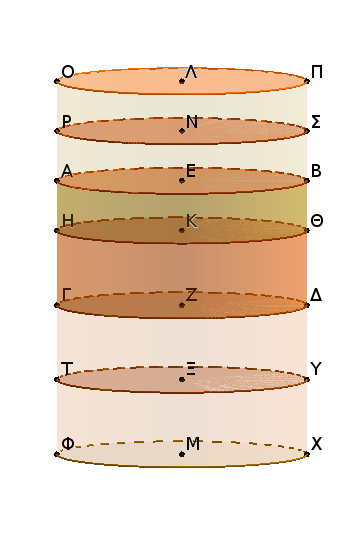
καὶ ἐπεὶ οἱ ΛΝ, ΝΕ, ΕΚ ἄξονες ἴσοι εἰσὶν ἀλλήλοις, οἱ ἄρα ΠΡ, ΡΒ, ΒΗ κύλινδροι πρὸς ἀλλήλους εἰσὶν ὡς αἱ βάσεις. ἴσαι δέ εἰσιν αἱ βάσεις· ἴσοι ἄρα καὶ οἱ ΠΡ, ΡΒ, ΒΗ κύλινδροι ἀλλήλοις.
επεὶ οὖν οἱ ΛΝ, ΝΕ, ΕΚ ἄξονες ἴσοι εἰσὶν ἀλλήλοις, εἰσὶ δὲ καὶ οἱ ΠΡ, ΡΒ, ΒΗ κύλινδροι ἴσοι ἀλλήλοις, καί ἐστιν ἴσον τὸ πλῆθος τῷ πλήθει, ὁσαπλασίων ἄρα ὁ ΚΛ ἄξων τοῦ ΕΚ ἄξονος, τοσαυταπλασίων ἔσται καὶ ὁ ΠΗ κύλινδρος τοῦ ΗΒ κυλίνδρου.
διὰ τὰ αὐτὰ δὴ καὶ ὁσαπλασίων ἐστὶν ὁ ΜΚ ἄξων τοῦ ΚΖ ἄξονος, τοσαυταπλασίων ἐστὶ καὶ ὁ ΧΗ κύλινδρος τοῦ ΗΔ κυλίνδρου. καὶ εἰ μὲν ἴσος ἐστὶν ὁ ΚΛ ἄξων τῷ ΚΜ ἄξονι, ἴσος ἔσται καὶ ὁ ΠΗ κύλινδρος τῷ ΗΧ κυλίνδρῳ, εἰ δὲ μείζων ὁ ἄξων τοῦ ἄξονος, μείζων καὶ ὁ κύλινδρος τοῦ κυλίνδρου, καὶ εἰ ἐλάσσων, ἐλάσσων.
τεσσάρων δὴ μεγεθῶν ὄντων, ἀξόνων μὲν τῶν ΕΚ, ΚΖ, κυλίνδρων δὲ τῶν ΒΗ, ΗΔ, εἴληπται ἰσάκις πολλαπλάσια, τοῦ μὲν ΕΚ ἄξονος καὶ τοῦ ΒΗ κυλίνδρου ὅ τε ΛΚ ἄξων καὶ ὁ ΠΗ κύλινδρος, τοῦ δὲ ΚΖ ἄξονες καὶ τοῦ ΗΔ κυλίνδρου ὅ τε ΚΜ ἄξων καὶ ὁ ΗΧ κύλινδρος, καὶ δέδεικται, ὅτι εἰ ὑπερέχει ὁ ΚΛ ἄξων τοῦ ΚΜ ἄξονος, ὑπερέχει καὶ ὁ ΠΗ κύλινδρος τοῦ ΗΧ κυλίνδρου, καὶ εἰ ἴσος, ἴσος, καὶ εἰ ἐλάσσων, ἐλάσσων.
ἔστιν ἄρα ὡς ὁ ΕΚ ἄξων πρὸς τὸν ΚΖ ἄξονα, οὕτως ὁ ΒΗ κύλινδρος πρὸς τὸν ΗΔ κύλινδρον· ὅπερ ἔδει δεῖξαι.
Οἱ ἐπὶ ἴσων βάσεων ὄντες κῶνοι καὶ κύλινδροι πρὸς αλλήλους εἰσὶν ὡς τὰ ὕψη.
῎Εστωσαν γὰρ ἐπὶ ἴσων βάσεων τῶν ΑΒ, ΓΔ κύκλων κύλινδροι οἱ ΕΒ, ΖΔ· λέγω, ὅτι ἐστὶν ὡς ὁ ΕΒ κύλινδρος πρὸς τὸν ΖΔ κύλινδρον, οὕτως ὁ ΗΘ ἄξων πρὸς τὸν ΚΛ ἄξονα.
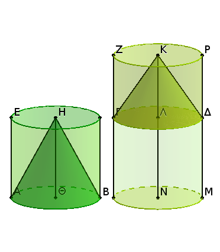
᾿Εκβεβλήσθω γὰρ ὁ ΚΛ ἄξων ἐπὶ τὸ Ν σημεῖον, καὶ κείσθω τῷ ΗΘ ἄξονι ἴσος ὁ ΛΝ, καὶ περὶ ἄξονα τὸν ΛΝ κύλινδρος νενοήσθω ὁ ΓΜ.
ἐπεὶ οὖν οἱ ΕΒ, ΓΜ κύλινδροι ὑπὸ τὸ αὐτὸ ὕψος εἰσίν, πρὸς ἀλλήλους εἰσὶν ὡς αἱ βάσεις. ἴσαι δέ εἰσίν αἱ βάσεις ἀλλήλαις· ἴσοι ἄρα εἰσὶ καὶ οἱ ΕΒ, ΓΜ κύλινδροι.
καὶ ἐπεὶ κύλινδρος ὁ ΖΜ ἐπιπέδῳ τέτμηται τῷ ΓΔ παραλλήλῳ ὄντι τοῖς ἀπεναντίον ἐπιπέδοις, ἔστιν ἄρα ὡς ὁ ΓΜ κύλινδρος πρὸς τὸν ΖΔ κύλινδρον, οὕτως ὁ ΛΝ ἄξων πρὸς τὸν ΚΛ ἄξονα. ἴσος δέ ἐστιν ὁ μὲν ΓΜ κύλινδρος τῷ ΕΒ κυλίνδρῳ, ὁ δὲ ΛΝ ἄξων τῷ ΗΘ ἄξονι· ἔστιν ἄρα ὡς ὁ ΕΒ κύλινδρος πρὸς τὸν ΖΔ κύλινδρον, οὕτως ὁ ΗΘ ἄξων πρὸς τὸν ΚΛ ἄξονα.
ὡς δὲ ὁ ΕΒ κύλινδρος πρὸς τὸν ΖΔ κύλινδρον, οὑτως ὁ ΑΒΗ κῶνος πρὸς τὸν ΓΔΚ κῶνον. καὶ ὡς ἄρα ὁ ΗΘ ἄξων πρὸς τὸν ΚΛ ἄξονα, οὕτως ὁ ΑΒΗ κῶνος πρὸς τὸν ΓΔΚ κῶνον καὶ ὁ ΕΒ κύλινδρος πρὸς τὸν ΖΔ κύλινδρον· ὅπερ ἔδει δεῖξαι.
Τῶν ἴσων κώνων καὶ κυλίνδρων ἀντιπεπόνθασιν αἱ βάσεις τοῖς ὕψεσιν· καὶ ὧν κώνων καὶ κυλίνδρων ἀντιπεπόνθασιν αἱ βάσεις τοῖς ὕψεσιν, ἴσοι εἰσὶν ἐκεῖνοι.
῎Εστωσαν ἴσοι κῶνοι καὶ κύλινδροι, ὧν βάσεις μὲν οἱ ΑΒΓΔ, ΕΖΗΘ κύκλοι, διάμετροι δὲ αὐτῶν αἱ ΑΓ, ΕΗ, ἅξονες δὲ οἱ ΚΛ, ΜΝ, οἵτινες καὶ ὕψη εἰσὶ τῶν κώνων ἢ κυλίνδρων, καὶ συμπεπληρώσθωσαν οἱ ΑΞ, ΕΟ κύλινδροι.
λέγω, ὅτι τῶν ΑΞ, ΕΟ κυλίνδρων ἀντιπεπόνθασιν αἱ βάσεις τοῖς ὕψεσιν, καί ἐστιν ὡς ἡ ΑΒΓΔ βάσις πρὸς τὴν ΕΖΗΘ βάσιν, οὕτως τὸ ΜΝ ὕψος πρὸς τὸ ΚΛ ὕψος. Τὸ γὰρ ΛΚ ὕψος τῷ ΜΝ ὕψει ἤτοι ἴσον ἐστὶν ἢ οὔ. ἔστω πρότερον ἴσον.
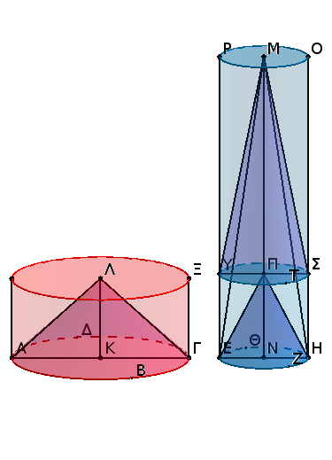
ἔστι δὲ καὶ ὁ ΑΞ κύλινδρος τῷ ΕΟ κυλίνδρῳ ἴσος. οἱ δὲ ὑπὸ τὸ αὐτὸ ὕψος ὄντες κῶνοι καὶ κύλινδροι πρὸς ἀλλήλους εἰσὶν ὡς αἱ βάσεις· ἴση ἄρα καὶ ἡ ΑΒΓΔ βάσις τῇ ΕΖΗΘ βάσει. ὥστε καὶ ἀντιπέπονθεν, ὡς ἡ ΑΒΓΔ βάσις πρὸς τὴν ΕΖΗΘ βάσιν, οὕτως τὸ ΜΝ ὕψος πρὸς τὸ ΚΛ ὕψος.
ἀλλὰ δὴ μὴ ἔστω τὸ ΛΚ ὕψος τῷ ΜΝ ἴσον, ἀλλ᾿ ἔστω μεῖζον τὸ ΜΝ, καὶ ἀφῃρήσθω ἀπὸ τοῦ ΜΝ ὕψους τῷ ΚΛ ἴσον τὸ ΠΝ, καὶ διὰ τοῦ Π σημείου τετμήσθω ὁ ΕΟ κύλινδρος ἐπιπέδῳ τῷ ΤΥΣ παραλλήλῳ τοῖς τῶν ΕΖΗΘ, ΡΟ κύκλων ἐπιπέδοις, καὶ ἀπὸ βάσεως μὲν τοῦ ΕΖΗΘ κύκλου, ὕψους δὲ τοῦ ΝΠ κύλινδρος νενοήσθω ὁ ΕΣ.
καί ἐπεὶ ἴσος ἐστὶν ὁ ΑΞ κύλινδρος τῷ ΕΟ κυλίνδρῳ, ἔστιν ἄρα ὡς ὁ ΑΞ κύλινδρος πρὸς τὸν ΕΣ κυλίνδρον, οὕτως ὁ ΕΟ κύλινδρος πρὸς τὸν ΕΣ κύλινδρον. ἀλλ᾿ ὡς μὲν ὁ ΑΞ κύλινδρος πρὸς τὸν ΕΣ κύλινδρον, οὕτως ἡ ΑΒΓΔ βάσις πρὸς τὴν ΕΖΗΘ· ὑπὸ γὰρ τὸ αὐτὸ ὕψος εἰσὶν οἱ ΑΞ, ΕΣ κύλινδροι· ὡς δὲ ὁ ΕΟ κύλινδρος πρὸς τὸν ΕΣ, οὕτως τὸ ΜΝ ὕψος πρὸς τὸ ΠΝ ὕψος· ὁ γὰρ ΕΟ κύλινδρος ἐπιπέδῳ τέτμηται παραλλήλῳ ὄντι τοῖς ἀπεναντίον ἐπιπέδοις. ἔστιν ἄρα καὶ ὡς ἡ ΑΒΓΔ βάσις πρὸς τὴν ΕΖΗΘ βάσιν, οὕτως τὸ ΜΝ ὕψος πρὸς τὸ ΠΝ ὕψος. ἴσον δὲ τὸ ΠΝ ὕψος τῷ ΚΛ ὕψει· ἔστιν ἄρα ὡς ἡ ΑΒΓΔ βάσις πρὸς τὴν ΕΖΗΘ βάσιν, οὕτως τὸ ΜΝ ὕψος πρὸς τὸ ΚΛ ὕψος. τῶν ἄρα ΑΞ, ΕΟ κυλίνδρων ἀντιπεπόνθασιν αἱ βάσεις τοῖς ὕψεσιν.
᾿Αλλὰ δὴ τῶν ΑΞ, ΕΟ κυλίνδρων ἀντιπεπονθέτωσαν αἱ βάσεις τοῖς ὕψεσιν, καὶ ἔστω ὡς ἡ ΑΒΓΔ βάσις πρὸς τὴν ΕΖΗΘ βάσιν, οὕτως τὸ ΜΝ ὕψος πρὸς τὸ ΚΛ ὕψος· λέγω, ὅτι ἴσος ἐστὶν ὁ ΑΞ κύλινδρος τῷ ΕΟ κυλίνδρῳ.
Τῶν γὰρ αὐτῶν κατασκευασθέντων ἐπεί ἐστιν ὡς ἡ ΑΒΓΔ βάσις πρὸς τὴν ΕΖΗΘ βάσιν, οὕτως τὸ ΜΝ ὕψος πρὸς τὸ ΚΛ ὕψος, ἴσον δὲ τὸ ΚΛ ὕψος τῷ ΠΝ ὕψει, ἔσται ἄρα ὡς ἡ ΑΒΓΔ βάσις πρὸς τὴν ΕΖΗΘ βάσιν, οὕτως τὸ ΜΝ ὕψος πρὸς τὸ ΠΝ ὕψος. ἀλλ᾿ ὡς μὲν ἡ ΑΒΓΔ βάσις πρὸς τὴν ΕΖΗΘ βάσιν, οὕτως ὁ ΑΞ κύλινδρος πρὸς τὸν ΕΣ κύλινδρον· ὑπὸ γὰρ τὸ αὐτὸ ὕψος εἰσίν· ὡς δὲ τὸ ΜΝ ὕψος πρὸς τὸ ΠΝ [ὕψος], οὕτως ὁ ΕΟ κύλινδρος πρὸς τὸν ΕΣ κύλινδρον· ἔστιν ἄρα ὡς ὁ ΑΞ κύλινδρος πρὸς τὸν ΕΣ κύλινδρον, οὕτως ὁ ΕΟ κύλινδρος πρὸς τὸν ΕΣ. ἴσος ἄρα ὁ ΑΞ κύλινδρος τῷ ΕΟ κυλίνδρῳ. ὡσαύτως δὲ καὶ ἐπὶ τῶν κώνων· ὅπερ ἔδει δεῖξαι.
Δύο κύκλων περὶ τὸ αὐτὸ κέντρον ὄντων εἰς τὸν μείζονα κύκλον πολύγωνον ἰσόπλευρόν τε καὶ ἀρτιόπλευρον ἐγγράψαι μὴ ψαῦον τοῦ ἐλάσσονος κύκλου.
῎Εστωσαν οἱ δοθέντες δύο κύκλοι οἱ ΑΒΓΔ, ΕΖΗΘ περὶ τὸ αὐτὸ κέντρον τὸ Κ· δεῖ δὴ εἰς τὸν μείζονα κύκλον τὸν ΑΒΓΔ πολύγωνον ἰσόπλευρόν τε καὶ ἀρτιόπλευρον ἐγγράψαι μὴ ψαῦον τοῦ ΕΖΗΘ κύκλου.
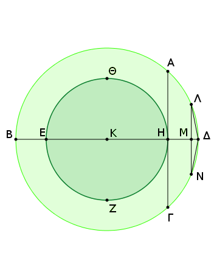
῎Ηχθω γὰρ διὰ τοῦ Κ κέντρου εὐθεῖα ἡ ΒΚΔ, καὶ ἀπὸ τοῦ Η σημείου τῇ ΒΔ εὐθείᾳ πρὸς ὀρθὰς ἤχθω ἡ ΗΑ καὶ διήχθω ἐπὶ τὸ Γ· ἡ ΑΓ ἄρα ἐφάπτεται τοῦ ΕΖΗΘ κύκλου.
τέμνοντες δὴ τὴν ΒΑΔ περιφέρειαν δίχα καὶ τὴν ἡμίσειαν αὐτῆς δίχα καὶ τοῦτο ἀεὶ ποιοῦντες καταλείψομεν περιφέρειαν ἐλάσσονα τῆς ΑΔ.
λελείφθω, καὶ ἔστω ἡ ΛΔ, καὶ ἀπὸ τοῦ Λ ἐπὶ τὴν ΒΔ κάθετος ἤχθω ἡ ΛΜ καὶ διήχθω ἐπὶ τὸ Ν, καὶ ἐπεζεύχθωσαν αἱ ΛΔ, ΔΝ· ἴση ἄρα ἐστὶν ἡ ΛΔ τῇ ΔΝ.
καὶ ἐπεὶ παράλληλός ἐστιν ἡ ΛΝ τῇ ΑΓ, ἡ δὲ ΑΓ ἐφάπτεται τοῦ ΕΖΗΘ κύκλου, ἡ ΛΝ ἄρα οὐκ ἐφάπτεται τοῦ ΕΖΗΘ κύκλου· πολλῷ ἄρα αἱ ΛΔ, ΔΝ οὐκ ἐφάπτονται τοῦ ΕΖΗΘ κύκλου.
ἐὰν δὴ τῇ ΛΔ εὐθείᾳ ἴσας κατὰ τὸ συνεχὲς ἐναρμόσωμεν εἰς τὸν ΑΒΓΔ κύκλον, ἐγγραφήσεται εἰς τὸν ΑΒΓΔ κύκλον πολύγωνον ἰσόπλευρόν τε καὶ ἀρτιόπλευρον μὴ ψαῦον τοῦ ἐλάσσονος κύκλου τοῦ ΕΖΗΘ· ὅπερ ἔδει ποιῆσαι.
Δύο σφαιρῶν περὶ τὸ αὐτὸ κέντρον οὐσῶν εἰς τὴν μείζονα σφαῖραν στερεὸν πολύεδρον ἐγγράψαι μὴ ψαῦον τῆς ἐλάσσονος σφαίρας κατὰ τὴν ἐπιφάνειαν.
Νενοήσθωσαν δύο σφαῖραι περὶ τὸ αὐτὸ κέντρον τὸ Α· δεῖ δὴ εἰς τὴν μείζονα σφαῖραν στερεὸν πολύεδρον ἐγγράψαι μὴ ψαῦον τῆς ἐλάσσονος σφαίρας κατὰ τὴν ἐπιφάνειαν.
Τετμήσθωσαν αἱ σφαῖραι ἐπιπέδῳ τινὶ διὰ τοῦ κέντρου· ἔσονται δὴ αἱ τομαὶ κύκλοι, ἐπειδήπερ μενούσης τῆς διαμέτρου καὶ περιφερομένου τοῦ ἡμικυκλίου ἐγίγνετο ἡ σφαῖρα· ὥστε καὶ καθ᾿ οἵας ἂν θέσεως ἐπινοήσωμεν τὸ ἡμικύκλιον, τὸ δι᾿ αὐτοῦ ἐκβαλλόμενον ἐπίπεδον ποιήσει ἐπὶ τῆς ἐπιφανείας τῆς σφαίρας κύκλον.
καὶ φανερόν, ὅτι καὶ μέγιστον, ἐπειδήπερ ἡ διάμετρος τῆς σφαίρας, ἥτις ἐστὶ καὶ τοῦ ἡμικυκλίου διάμετρος δηλαδὴ καὶ τοῦ κύκλου, μείζων ἐστὶ πασῶν τῶν εἰς τὸν κύκλον ἢ τὴν σφαῖραν διαγομένων [εὐθειῶν].
ἔστω οὖν ἐν μὲν τῇ μείζονι σφαίρᾳ κύκλος ὁ ΒΓΔΕ, ἐν δὲ τῇ ἐλάσσονι σφαίρᾳ κύκλος ὁ ΖΗΘ, καὶ ἤχθωσαν αὐτῶν δύο διάμετροι πρὸς ὀρθὰς ἀλλήλαις αἱ ΒΔ, ΓΕ, καὶ δύο κύκλων περὶ τὸ αὐτὸ κέντρον ὄντων τῶν ΒΓΔΕ, ΖΗΘ εἰς τὸν μείζονα κύκλον τὸν ΒΓΔΕ πολύγωνον ἰσόπλευρον καὶ ἀρτιόπλευρον ἐγγεγράφθω μὴ ψαῦον τοῦ ἐλάσσονος κύκλου τοῦ ΖΗΘ, οὗ πλευραὶ ἔστωσαν ἐν τῷ ΒΕ τεταρτημορίῳ αἱ ΒΚ, ΚΛ, ΛΜ, ΜΕ, καὶ ἐπιζευχθεῖσα ἡ ΚΑ διήχθω ἐπὶ τὸ Ν, καὶ ἀνεστάτω ἀπὸ τοῦ Α σημείου τῷ τοῦ ΒΓΔΕ κύκλου ἐπιπέδῳ πρὸς ὀρθὰς ἡ ΑΞ καὶ συμβαλλέτω τῇ ἐπιφανείᾳ τῆς σφαίρας κατὰ τὸ Ξ, καὶ διὰ τῆς ΑΞ καὶ ἑκατέρας τῶν ΒΔ, ΚΝ ἐπίπεδα ἐκβεβλήσθω· ποιήσουσι δὴ διὰ τὰ εἰρημένα ἐπὶ τῆς ἐπιφανείας τῆς σφαίρας μεγίστους κύκλους. ποιείτωσαν, ὧν ἡμικύκλια ἔστω ἐπὶ τῶν ΒΔ, ΚΝ διαμέτρων τὰ ΒΞΔ, ΚΞΝ.
καὶ ἐπεὶ ἡ ΞΑ ὀρθή ἐστι πρὸς τὸ τοῦ ΒΓΔΕ κύκλου ἐπίπεδον, καὶ πάντα ἄρα τὰ διὰ τῆς ΞΑ ἐπίπεδά ἐστιν ὀρθὰ πρὸς τὸ τοῦ ΒΓΔΕ κύκλου ἐπίπεδον· ὥστε καὶ τὰ ΒΞΔ, ΚΞΝ ἡμικύκλια ὀρθά ἐστι πρὸς τὸ τοῦ ΒΓΔΕ κύκλου ἐπίπεδον.
καὶ ἐπεὶ ἴσα ἐστὶ τὰ ΒΕΔ, ΒΞΔ, ΚΞΝ ἡμικύκλια· ἐπὶ γὰρ ἴσων εἰσὶ διαμέτρων τῶν ΒΔ, ΚΝ· ἴσα ἐστὶ καὶ τὰ ΒΕ, ΒΞ, ΚΞ τεταρτημόρια ἀλλήλοις. ὄσαι ἄρα εἰσὶν ἐν τῷ ΒΕ τεταρτημορίῳ πλευραὶ τοῦ πολυγώνου, τοσαῦταί εἰσι καὶ ἐν τοῖς ΒΞ, ΚΞ τεταρτημορίοις ἴσαι ταῖς ΒΚ, ΚΛ, ΛΜ, ΜΕ εὐθείαις.
ἐγγεγράφθωσαν καὶ ἔστωσαν αἱ ΒΟ, ΟΠ, ΠΡ, ΡΞ, ΚΣ, ΣΤ, ΤΥ, ΥΞ, καὶ ἐπεζεύχθωσαν αἱ ΣΟ, ΤΠ, ΥΡ, καὶ ἀπὸ τῶν Ο, Σ ἐπὶ τὸ τοῦ ΒΓΔΕ κύκλου ἐπίπεδον κάθετοι ἤχθωσαν· πεσοῦνται δὴ ἐπὶ τὰς κοινὰς τομὰς τῶν ἐπιπέδων τὰς ΒΔ, ΚΝ, ἐπειδήπερ καὶ τὰ τῶν ΒΞΔ, ΚΞΝ ἐπίπεδα ὀρθά ἐστι πρὸς τὸ τοῦ ΒΓΔΕ κύκλου ἐπίπεδον.
πιπτέτωσαν, καὶ ἔστωσαν αἱ ΟΦ, ΣΧ, καὶ ἐπεζεύχθω ἡ ΧΦ. καὶ ἐπεὶ ἐν ἴσοις ἡμικυκλίοις τοῖς ΒΞΔ, ΚΞΝ ἴσαι ἀπειλημμέναι εἰσὶν αἱ ΒΟ, ΚΣ, καὶ κάθετοι ἠγμέναι εἰσὶν αἱ ΟΦ, ΣΧ, ἴση [ἄρα] ἐστὶν ἡ μὲν ΟΦ τῇ ΣΧ, ἡ δὲ ΒΦ τῇ ΚΧ. ἔστι δὲ καὶ ὅλη ἡ ΒΑ ὅλῃ τῇ ΚΑ ἴση· καὶ λοιπὴ ἄρα ἡ ΦΑ λοιπῇ τῇ ΧΑ ἐστιν ἴση· ἔστιν ἄρα ὡς ἡ ΒΦ πρὸς τὴν ΦΑ, οὕτως ἡ ΚΧ πρὸς τὴν ΧΑ· παράλληλος ἄρα ἐστὶν ἡ ΧΦ τῇ ΚΒ.
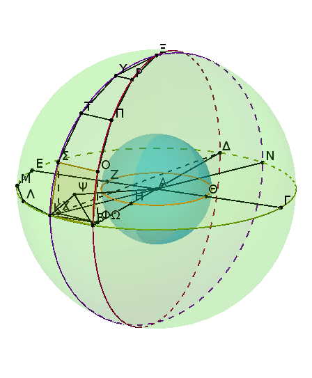
καὶ ἐπεὶ ἑκατέρα τῶν ΟΦ, ΣΧ ὀρθή ἐστι πρὸς τὸ τοῦ ΒΓΔΕ κύκλου ἐπίπεδον, παράλληλος ἄρα ἐστὶν ἡ ΟΦ τῇ ΣΧ. ἐδείχθη δὲ αὐτῇ καὶ ἴση· καὶ αἱ ΧΦ, ΣΟ ἄρα ἴσαι εἰσὶ καὶ παράλληλοι.
καὶ ἐπεὶ παράλληλός ἐστιν ἡ ΧΦ τῇ ΣΟ, ἀλλὰ ἡ ΧΦ τῇ ΚΒ ἐστι παράλληλος, καὶ ἡ ΣΟ ἄρα τῇ ΚΒ ἐστι παράλληλος. καὶ ἐπιζευγνύουσιν αὐτὰς αἱ ΒΟ, ΚΣ· τὸ ΚΒΟΣ ἄρα τετράπλευρον ἐν ἑνί ἐστιν ἐπιπέδῳ, ἐπειδήπερ, ἐὰν ὦσι δύο εὐθεῖαι παράλληλοι, καὶ ἐφ᾿ ἑκατέρας αὐτῶν ληφθῇ τυχόντα σημεῖα, ἡ ἐπὶ τὰ σημεῖα ἐπιζευγνυμένη εὐθεῖα ἐν τῷ αὐτῷ ἐπιπέδῳ ἐστὶ ταῖς παραλλήλοις. διὰ τὰ αὐτὰ δὴ καὶ ἑκάτερον τῶν ΣΟΠΤ, ΤΠΡΥ τετραπλεύρων ἐν ἑνί ἐστιν ἐπιπέδῳ. ἔστι δὲ καὶ τὸ ΥΡΞ τρίγωνον ἐν ἑνὶ ἑπιπέδῳ.
ἐὰν δὴ νοήσωμεν ἀπὸ τῶν Ο, Σ, Π, Τ, Ρ, Υ σημείων ἐπὶ τὸ Α ἐπιζευγνυμένας εὐθείας, συσταθήσεταί τι σχῆμα στερεὸν πολύεδρον ματαξὺ τῶν ΒΞ, ΚΞ περιφερειῶν ἐκ πυραμίδων συγκείμενον, ὧν βάσεις μὲν τὰ ΚΒΟΣ, ΣΟΠΤ, ΤΠΡΥ τετράπλευρα καὶ τὸ ΥΡΞ τρίγωνον, κορυφὴ δὲ τὸ Α σημεῖον.
ἐὰν δὲ καὶ ἐπὶ ἑκάστης τῶν ΚΛ, ΛΜ, ΜΕ πλευρῶν καθάπερ ἐπὶ τῆς ΒΚ τὰ αὐτὰ κατασκευάσωμεν καὶ ἔτι τῶν λοιπῶν τριῶν τεταρτημορίων, συσταθήσεταί τι σχῆμα πολύεδρον ἐγγεγραμμένον εἰς τὴν σφαῖραν πυραμίσι περιεχόμενον, ὧν βάσιες [μὲν] τὰ εἰρημένα τετράπλευρα καὶ τὸ ΥΡΞ τρίγωνον καὶ τὰ ὁμοταγῆ αὐτοῖς, κορυφὴ δὲ τὸ Α σημεῖον.
Λέγω ὅτι τὸ εἰρημένον πολύεδρον οὐκ ἐφάψεται τῆς ἐλάσσονος σφαίρας κατὰ τὴν ἐπιφάνειαν, ἐφ᾿ ἧς ἐστιν ὁ ΖΗΘ κύκλος. ῎Ηχθω ἀπὸ τοῦ Α σημείου ἐπὶ τὸ τοῦ ΚΒΟΣ τετραπλεύρου ἐπίπεδον κάθετος ἡ ΑΨ καὶ συμβαλλέτω τῷ ἐπιπέδῳ κατὰ τὸ Ψ σημεῖον, καὶ ἐπεζεύχθωσαν αἱ ΨΒ, ΨΚ.
καὶ ἐπεὶ ἡ ΑΨ ὀρθή ἐστι πρὸς τὸ τοῦ ΚΒΟΣ τετραπλεύρου ἐπίπεδον, καὶ πρὸς πάσας ἄρα τὰς ἁπτομένας αὐτῆς εὐθείας καὶ οὔσας ἐν τῷ τοῦ τετραπλεύρου ἐπιπέδῳ ὀρθή ἐστιν. ἡ ΑΨ ἄρα ὀρθή ἐστι πρὸς ἑκατέραν τῶν ΒΨ, ΨΚ. καὶ ἐπεὶ ἴση ἐστὶν ἡ ΑΒ τῇ ΑΚ, ἵσον ἐστὶ καὶ τὸ ἀπὸ τῆς ΑΒ τῷ ἀπὸ τῆς ΑΚ. καί ἐστι τῷ μὲν ἀπὸ τῆς ΑΒ ἴσα τὰ ἀπὸ τῶν ΑΨ, ΨΒ· ὀρθὴ γὰρ ἡ πρὸς τῷ Ψ· τῷ δὲ ἀπὸ τῆς ΑΚ ἴσα τὰ ἀπὸ τῶν ΑΨ, ΨΚ. τὰ ἄρα ἀπὸ τῶν ΑΨ, ΨΒ ἴσα ἐστὶ τοῖς ἀπὸ τῶν ΑΨ, ΨΚ. κοινὸν ἀφῃρήσθω τὸ ἀπὸ τῆς ΑΨ· λοιπὸν ἄρα τὸ ἀπὸ τῆς ΒΨ λοιπῷ τῷ ἀπὸ τῆς ΨΚ ἴσον ἐστίν· ἴση ἄρα ἡ ΒΨ τῇ ΨΚ.
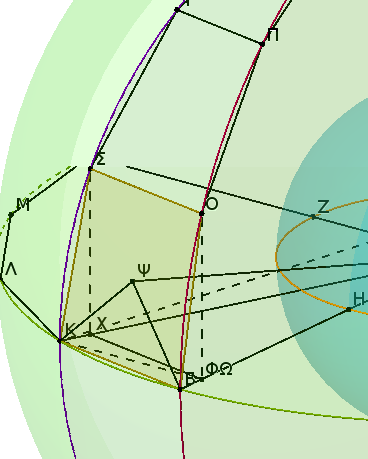
ὁμοίως δὴ δείξομεν, ὅτι καὶ αἱ ἀπὸ τοῦ Ψ ἐπὶ τὰ Ο, Σ ἐπιζευγνύμεναι εὐθεῖαι ἴσαι εἰσὶν ἑκατέρᾳ τῶν ΒΨ, ΨΚ. ὁ ἄρα κέντρῳ τῷ Ψ καὶ διαστήματι ἑνὶ τῶν ΨΒ, ΨΚ γραφόμενος κύκλος ἥξει καὶ διὰ τῶν Ο, Σ, καὶ ἔσται ἐν κύκλῳ τὸ ΚΒΟΣ τετράπλευρον.
Καὶ ἐπεὶ μείζων ἐστὶν ἡ ΚΒ τῆς ΧΦ, ἴση δὲ ἡ ΧΦ τῇ ΣΟ, μείζων ἄρα ἡ ΚΒ τῆς ΣΟ. ἴση δὲ ἡ ΚΒ ἑκατέρᾳ τῶν ΚΣ, ΒΟ· καὶ ἑκατέρα ἄρα τῶν ΚΣ, ΒΟ τῆς ΣΟ μείζων ἐστίν. καὶ ἐπεὶ ἐν κύκλῳ τετράπλευρόν ἐστι τὸ ΚΒΟΣ, καὶ ἴσαι αἱ ΚΒ, ΒΟ, ΚΣ, καὶ ἐλάττων ἡ ΟΣ, καὶ ἐκ τοῦ κέντρου τοῦ κύκλου ἐστὶν ἡ ΒΨ, τὸ ἄρα ἀπὸ τῆς ΚΒ τοῦ ἀπὸ τῆς ΒΨ μεῖζόν ἐστιν ἢ διπλάσιον.
ἤχθω ἀπὸ τοῦ Κ ἐπὶ τὴν ΒΦ κάθετος ἡ ΚΩ. καὶ ἐπεὶ ἡ ΒΔ τῆς ΔΩ ἐλάττων ἐστὶν ἢ διπλῆ, καί ἐστιν ὡς ἡ ΒΔ πρὸς τὴν ΔΩ, οὕτως τὸ ὑπὸ τῶν ΔΒ, ΒΩ πρὸς τὸ ὑπὸ [τῶν] ΔΩ, ΩΒ, ἀναγραφομένου ἀπὸ τῆς ΒΩ τετραγώνου καὶ συμπληρουμένου τοῦ ἐπὶ τῆς ΩΔ παραλληλογράμμου καὶ τὸ ὑπὸ ΔΒ, ΒΩ ἄρα τοῦ ὑπὸ ΔΩ, ΩΒ ἔλαττόν ἐστιν ἢ διπλάσιον.
καί ἐστι τῆς ΚΔ ἐπιζευγνυμένης τὸ μὲν ὑπὸ ΔΒ, ΒΩ ἴσον τῷ ἀπὸ τῆς ΒΚ, τὸ δὲ ὑπὸ τῶν ΔΩ, ΩΒ ἴσον τῷ ἀπὸ τῆς ΚΩ· τὸ ἄρα ἀπὸ τῆς ΚΒ τοῦ ἀπὸ τῆς ΚΩ ἔλασσόν ἐστιν ἢ διπλάσιον. ἀλλὰ τὸ ἀπὸ τῆς ΚΒ τοῦ ἀπὸ τῆς ΒΨ μεῖζόν ἐστιν ἢ διπλάσιον· μεῖζον ἄρα τὸ ἀπὸ τῆς ΚΩ τοῦ ἀπὸ τῆς ΒΨ. καὶ ἐπεὶ ἴση ἐστὶν ἡ ΒΑ τῇ ΚΑ, ἴσον ἐστὶ τὸ ἀπὸ τῆς ΒΑ τῷ ἀπὸ τῆς ΑΚ. καί ἐστι τῷ μὲν ἀπὸ τῆς ΒΑ ἴσα τὰ ἀπὸ τῶν ΒΨ, ΨΑ, τῷ δὲ ἀπὸ τῆς ΚΑ ἴσα τὰ ἀπὸ τῶν ΚΩ, ΩΑ· τὰ ἄρα ἀπὸ τῶν ΒΨ, ΨΑ ἴσα ἐστὶ τοῖς ἀπὸ τῶν ΚΩ, ΩΑ, ὧν τὸ ἀπὸ τῆς ΚΩ μεῖζον τοῦ ἀπὸ τῆς ΒΨ· λοιπὸν ἄρα τὸ ἀπὸ τῆς ΩΑ ἔλασσόν ἐστι τοῦ ἀπὸ τῆς ΨΑ. μείζων ἄρα ἡ ΑΨ τῆς ΑΩ· πολλῷ ἄρα ἡ ΑΨ μείζων ἐστὶ τῆς ΑΗ. καί ἐστιν ἡ μὲν ΑΨ ἐπὶ μίαν τοῦ πολυέδρου βάσιν, ἡ δὲ ΑΗ ἐπὶ τὴν τῆς ἐλάσσονος σφαίρας ἐπιφάνειαν· ὥστε τὸ πολύεδρον οὐ ψαύσει τῆς ἐλάσσονος σφαίρας κατὰ τὴν ἐπιφάνειαν.
Δύο ἄρα σφαιρῶν περὶ τὸ αὐτὸ κέντρον οὐσῶν εἰς τὴν μείζονα σφαῖραν στερεὸν πολύεδρον ἐγγέγραπται μὴ ψαῦον τῆς ἐλάσσονος σφαίρας κατὰ τὴν ἐπιφάνειαν· ὅπερ ἔδει ποιῆσαι.
Πόρισμα᾿Εὰν δὲ καὶ εἰς ἑτέραν σφαῖραν τῷ ἐν τῇ ΒΓΔΕ σφαίρᾳ στερεῷ πολυέδρῳ ὅμοιον στερεὸν πολύεδρον ἐγγραφῇ, τὸ ἐν τῇ ΒΓΔΕ σφαίρᾳ στερεὸν πολύεδρον πρὸς τὸ ἐν τῇ ἑτέρᾳ σφαίρᾳ στερεὸν πολύεδρον τριπλασίονα λόγον ἔχει, ἤπερ ἡ τῆς ΒΓΔΕ σφαίρας διάμετρος πρὸς τὴν τῆς ἑτέρας σφαίρας διάμετρον. διαιρεθέντων γὰρ τῶν στερεῶν εἰς τὰς ὁμοιοπληθεῖς καὶ ὁμοιοταγεῖς πυραμίδας ἔσονται αἱ πυραμίδες ὅμοιαι. αἱ δὲ ὅμοιαι πυραμίδες πρὸς ἀλλήλας ἐν τριπλασίονι λόγῳ εἰσὶ τῶν ὁμολόγων πλευρῶν· ἡ ἄρα πυραμίς, ἧς βάσις μέν ἐστι τὸ ΚΒΟΣ τετράπλευρον, κορυφὴ δὲ τὸ Α σημεῖον, πρὸς τὴν ἐν τῇ ἑτέρᾳ σφαίρᾳ ὁμοιοταγῆ πυραμίδα τριπλασίονα λόγον ἔχει, ἤπερ ἡ ὁμόλογος πλευρὰ πρὸς τὴν ὁμόλογον πλευράν, τουτέστιν ἤπερ ἡ ΑΒ ἐκ τοῦ κέντρου τῆς σφαίρας τῆς περὶ κέντρον τὸ Α πρὸς τὴν ἐκ τοῦ κέντρου τῆς ἑτέρας σφαίρας. ὁμοίως καὶ ἑκάστη πυραμὶς τῶν ἐν τῇ περὶ κέντρον τὸ Α σφαίρᾳ πρὸς ἑκάστην ὁμοταγῆ πυραμίδα τῶν ἐν τῇ ἑτέρᾳ σφαίρᾳ τριπλασίονα λόγον ἕξει, ἤπερ ἡ ΑΒ πρὸς τὴν ἐκ τοῦ κέντρου τῆς ἑτέρας σφαίρας. καὶ ὡς ἓν τῶν ἡγουμένων πρὸς ἓν τῶν ἑπομένων, οὕτως ἅπαντα τὰ ἡγούμενα πρὸς ἅπαντα τὰ ἑπόμενα· ὥστε ὅλον τὸ ἐν τῇ περὶ κέντρον τὸ Α σφαίρᾳ στερεὸν πολύεδρον πρὸς ὅλον τὸ ἐν τῇ ἑτέρᾳ [σφαίρᾳ] στερεὸν πολύεδρον τριπλασίονα λόγον ἕξει, ἤπερ ἡ ΑΒ πρὸς τὴν ἐκ τοῦ κέντρου τῆς ἑτέρας σφαίρας, τουτέστιν ἤπερ ἡ ΒΔ διάμετρος πρὸς τὴν τῆς ἑτέρας σφαίρας διάμετρον· ὅπερ ἔδει δεῖξαι.
Αἱ σφαῖραι πρὸς ἀλλήλας ἐν τριπλασίονι λόγῳ εἰσὶ τῶν ἰδίων διαμέτρων.
Νενοήσθωσαν σφαῖραι αἱ ΑΒΓ, ΔΕΖ, διάμετροι δὲ αὐτῶν αἱ ΒΓ, ΕΖ· λέγω, ὅτι ἡ ΑΒΓ σφαῖρα πρὸς τὴν ΔΕΖ σφαῖραν τριπλασίονα λόγον ἔχει ἤπερ ἡ ΒΓ πρὸς τὴν ΕΖ.
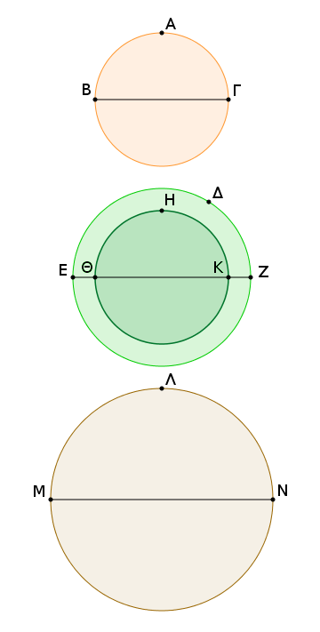
Εἰ γὰρ μὴ ἡ ΑΒΓ σφαῖρα πρὸς τὴν ΔΕΖ σφαῖραν τριπλασίονα λόγον ἔχει ἤπερ ἡ ΒΓ πρὸς τὴν ΕΖ, ἕξει ἄρα ἡ ΑΒΓ σφαῖρα πρὸς ἐλάσσονά τινα τῆς ΔΕΖ σφαίρας τριπλασίονα λόγον ἢ πρὸς μείζονα ἤπερ ἡ ΒΓ πρὸς τὴν ΕΖ.
ἐχέτω πρότερον πρὸς ἐλάσσονα τὴν ΗΘΚ, καὶ νενοήσθω ἡ ΔΕΖ τῇ ΗΘΚ περὶ τὸ αὐτὸ κέντρον, καὶ ἐγγεγράφθω εἰς τὴν μείζονα σφαῖραν τὴν ΔΕΖ στερεὸν πολύεδρον μὴ ψαῦον τῆς ἐλάσσονος σφαίρας τῆς ΗΘΚ κατὰ τὴν ἐπιφάνειαν, ἐγγεγράφθω δὲ καὶ εἰς τὴν ΑΒΓ σφαῖραν τῷ ἐν τῇ ΔΕΖ σφαίρᾳ στερεῷ πολυέδρῳ ὅμοιον στερεὸν πολύεδρον· τὸ ἄρα ἐν τῇ ΑΒΓ στερεὸν πολύεδρον πρὸς τὸ ἐν τῇ ΔΕΖ στερεὸν πολύεδρον τριπλασίονα λόγον ἔχει ἤπερ ἡ ΒΓ πρὸς τὴν ΕΖ.
ἔχει δὲ καὶ ἡ ΑΒΓ σφαῖρα πρὸς τὴν ΗΘΚ σφαῖραν τριπλασίονα λόγον ἤπερ ἡ ΒΓ πρὸς τὴν ΕΖ· ἔστιν ἄρα ὡς ἡ ΑΒΓ σφαῖρα πρὸς τὴν ΗΘΚ σφαῖραν, οὕτως τὸ ἐν τῇ ΑΒΓ σφαίρᾳ στερεὸν πολύεδρον πρὸς τὸ ἐν τῇ ΔΕΖ σφαίρᾳ στερεὸν πολύεδρον· ἐναλλὰξ [ἄρα] ὡς ἡ ΑΒΓ σφαῖρα πρὸς τὸ ἐν αὐτῇ πολύεδρον, οὕτως ἡ ΗΘΚ σφαῖρα πρὸς τὸ ἐν τῇ ΔΕΖ σφαίρᾳ στερεὸν πολύεδρον. μείζων δὲ ἡ ΑΒΓ σφαῖρα τοῦ ἐν αὐτῇ πολυέδρου· μείζων ἄρα καὶ ἡ ΗΘΚ σφαῖρα τοῦ ἐν τῇ ΔΕΖ σφαίρᾳ πολυέδρου. ἀλλὰ καὶ ἐλάττων· ἐμπεριέχεται γὰρ ὑπ᾿ αὐτοῦ. οὐκ ἄρα ἡ ΑΒΓ σφαῖρα πρὸς ἐλάσσονα τῆς ΔΕΖ σφαίρας τριπλασίονα λόγον ἔχει ἤπερ ἡ ΒΓ διάμετρος πρὸς τὴν ΕΖ. ὁμοίως δὴ δείξομεν, ὅτι οὐδὲ ἡ ΔΕΖ σφαῖρα πρὸς ἐλάσσονα τῆς ΑΒΓ σφαίρας τριπλασίονα λόγον ἔχει ἤπερ ἡ ΕΖ πρὸς τὴν ΒΓ.
Λέγω δή, ὅτι οὐδὲ ἡ ΑΒΓ σφαῖρα πρὸς μείζονά τινα τῆς ΔΕΖ σφαίρας τριπλασίονα λόγον ἔχει ἤπερ ἡ ΒΓ πρὸς τὴν ΕΖ. Εἰ γὰρ δυνατόν, ἐχέτω πρὸς μείζονα τὴν ΛΜΝ· ἀνάπαλιν ἄρα ἡ ΛΜΝ σφαῖρα πρὸς τὴν ΑΒΓ σφαῖραν τριπλασίονα λόγον ἔχει ἤπερ ἡ ΕΖ διάμετρος πρὸς τὴν ΒΓ διάμετρον.
ὡς δὲ ἡ ΛΜΝ σφαῖρα πρὸς τὴν ΑΒΓ σφαῖραν, οὕτως ἡ ΔΕΖ σφαῖρα πρὸς ἐλάσσονά τινα τῆς ΑΒΓ σφαίρας, ἐπειδήπερ μείζων ἐστὶν ἡ ΛΜΝ τῆς ΔΕΖ, ὡς ἔμπροσθεν ἐδείχθη. καὶ ἡ ΔΕΖ ἄρα σφαῖρα πρὸς ἐλάσσονά τινα τῆς ΑΒΓ σφαίρας τριπλασίονα λόγον ἔχει ἤπερ ἡ ΕΖ πρὸς τὴν ΒΓ· ὅπερ ἀδύνατον ἐδείχθη.
οὐκ ἄρα ἡ ΑΒΓ σφαῖρα πρὸς μείζονά τινα τῆς ΔΕΖ σφαίρας τριπλασίονα λόγον ἔχει ἤπερ ἡ ΒΓ πρὸς τὴν ΕΖ. ἐδείχθη δέ, ὅτι οὐδὲ πρὸς ἐλάσσονα. ἡ ἄρα ΑΒΓ σφαῖρα πρὸς τὴν ΔΕΖ σφαῖραν τριπλασίονα λόγον ἔχει ἤπερ ἡ ΒΓ πρὸς τὴν ΕΖ· ὅπερ ἔδει δεῖξαι.